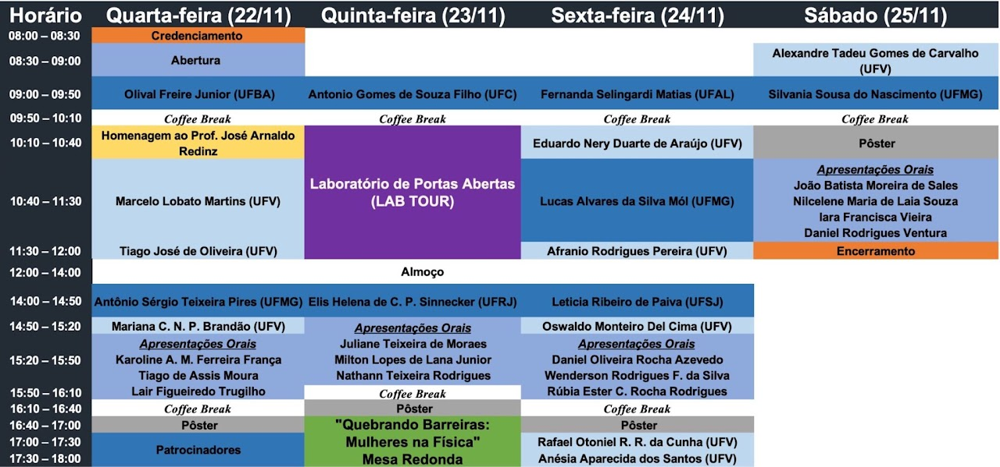

Livro de Resumos do V Simpósio da Pós-Graduação em Física/UFV
22 a 25 de novembro de 2023
Programa de Pós-Graduação em Física da Universidade Federal de Viçosa (UFV) | ufv2023.simposiofisica.com
O Programa de Pós-Graduação em Física da UFV realizará em 2023 o V Simpósio da Pós-Graduação em Física - UFV. O objetivo deste simpósio é promover a troca de experiência entre estudantes e reconhecidos pesquisadores do cenário nacional. O evento tem como público alvo estudantes de graduação e de pós-graduação do curso de Física e áreas afins, bem como estudantes do ensino médio da rede pública e privada. As atividades propostas para o simpósio incluem palestras por professores convidados, apresentações orais de discentes, sessão de pôsteres, laboratórios de portas abertas e mesa-redonda.
Cronograma

Mapa do evento
Dia 22 de novembro de 2023
Convidados Externos
CE1-01 – Do debate sobre interpretações à informação quântica - Sobre os experimentos de Alain Aspect e o Prêmio Nobel 2022 (Olival Freire Junior)
Olival Freire Junior, Universidade Federal da Bahia (UFBA) | olival.freire@gmail.com
Os três experimentos de Alain Aspect sobre o Teorema de Bell, publicados no início dos anos 1980, foram um ponto de virada na história da pesquisa sobre os fundamentos da mecânica quântica não apenas porque eles corroboraram o entrelaçamento quântico como propriedade especificamente quântica, mas também porque esses experimentos trouxeram amplo reconhecimento a esse campo de pesquisa e ao próprio Aspect. Esses experimentos podem ser considerados os precursores mais diretos da pesquisa sobre informação quântica, a qual floresceria uma década depois. Estes experimentos estão na base da atribuição do Prêmio Nobel de Física de 2022 a John Clauser, Alain Aspect e Anton Zeilinger.
CE1-02 – Topologia em Matéria Condensada (Antônio Sérgio Teixeira Pires)
Antônio Sérgio Teixeira Pires, Universidade Federal de Minas Gerais (UFMG) | antpires@fisica.ufmg.br
Nos últimos anos surgiu um grande interesse na aplicação de topologia em matéria condensada. Conceitos oriundos da topologia tornaram-se essenciais para a compreensão de vários fenômenos na área. Nesta palestra pretendo fornecer uma breve introdução a alguns métodos em topologia e mostrar algumas aplicações em física da matéria condensada. Entre outros conceitos pretendo abordar: efeito Hall quântico, efeito Hall quântico de spin, invariantes topológicos e correspondência bulco borda.
Convidados Internos
CI1-01 – Homenagem ao Prof. José Arnaldo Redinz (V Simpósio da Pós-Graduação em Física - UFV)
V Simpósio da Pós-Graduação em Física - UFV, Universidade Federal de Viçosa (UFV) | simposiofisicaufv@gmail.com
É com imenso pesar que informamos o falecimento do Professor José Arnaldo Redinz, ocorrido em 16 de setembro de 2023, aos 58 anos. Zé, como era comumente chamado pelos colegas, era professor titular do Departamento de Física (DPF) da Universidade Federal de Viçosa (UFV) e foi um membro fundador do Programa de Pós-Graduação em Física da UFV. Professor brilhante, com uma maneira muito peculiar de lecionar as aulas e um dom muito raro de fazer qualquer teoria ou conceito físico parecerem triviais, exerceu uma profunda influência em todos estudantes que tiveram oportunidade de serem seus alunos em quase três décadas de atuação na UFV, especialmente naqueles que seguiram a carreira docente. Como legado de sua grande dedicação ao ensino de Física, deixou excelentes livros de Física Básica (Mecânica e Eletromagnetismo) – que ele disponibilizava para os estudantes, mas nunca foram publicados –, onde vários traços de sua didática impecável podem ser observados. A sua partida deixa um grande vazio em nosso Departamento e representa uma grande perda para o ensino na UFV. Todos os colegas do DPF/UFV se solidarizam com a família do Zé neste momento de dor.
CI1-02 – A rebelde, o mestre e o papel social do vetor de Poynting (Marcelo Lobato Martins)
Marcelo Lobato Martins, Universidade Federal de Viçosa (UFV) | mmartins@ufv.br
Como homenagear um colega morto? Bradando aos quatro ventos suas muitas realizações singulares ou refletindo em silêncio sobre seus sonhos? A primeira estratégia é segura porém superficial. Permite quantificar, hierarquizar e reduzir todos a engrenagens de uma máquina poderosa, inumana. A segunda é experiência subjetiva e circunscrita aos que conheceram suficientemente o homenageado. Ela não produz informação nova capaz de afetar a trajetória de outros. Portanto, não serve ao propósito deste Simpósio. Contudo, existe uma terceira via que faz uma inferência arriscada: derivar sonhos a partir de algumas ações concretas. Em conformidade, recordaremos brevemente a atuação do nosso brilhante colega José Arnaldo Redinz desde sua chegada à UFV e apontaremos como ela sustentou e consolidou as bases filosóficas que norteiam a caminhada do DPF. Se decepcionará aquele que espera uma argumentação lógica, porque contradições são inerentes às ações humanas. Tampouco a análise será isenta. Ao contrário, será engajada como era o professor Zé Arnaldo no projeto de promover o encontro do Brasil com ele próprio, educado, igualitário, desenvolvido e soberano.
CI1-03 – 20 anos de IC na UFV: Algumas memórias sobre a orientação/colaboração com o Prof. José Arnaldo Redinz (Tiago José de Oliveira)
Tiago José de Oliveira, Universidade Federal de Viçosa (UFV) | tiago@ufv.br
Para celebrar a sua vida e obra, nesta apresentação eu farei um breve tour pelos trabalhos que desenvolvi com o Prof. Zé Arnaldo. Essa história teve início em 2003, quando comecei a trabalhar sob sua orientação, na condição de aluno de IC, estudando problemas relacionados ao crescimento de interfaces. O Zé Arnaldo foi um dos pioneiros nessa linha de pesquisa no DPF/UFV e ela acabou se tornando muito importante em nossa pós-graduação, envolvendo diversos professores (inclusive com algumas colaborações entre teóricos e experimentais), com várias teses e dissertações defendidas no assunto e algumas dezenas de artigos publicados (alguns de bastante impacto). A ideia proposta pelo Zé Arnaldo para o meu projeto de IC foi tentar misturar caos com crescimento de interfaces, usando para isso o mapa logístico. Apesar de encontrarmos uma série de resultados interessantes, tudo parecia muito exótico e sem muita conexão com os crescimentos encontrados na natureza. Então, nós começamos a estudar modelos de crescimento competitivos (abandonando o caos); um assunto que estava muito em alta naquele momento. Tendo como base alguns modelos da literatura, nós concluímos a IC propondo três novos modelos competitivos na minha monografia de fim de curso. Os resultados para um deles foram publicados no ano seguinte [Phys. Rev. E 74, 011604 (2006)], confirmando numericamente algumas teorias de escala. Quando eu retornei para o DPF/UFV em 2010, nós voltamos a estudar outro desses modelos, que envolvia a competição entre a deposição de partículas muito energéticas e partículas pouco energéticas. Esse problema foi passado para o estudante Juvenil Oliveira Filho, que estava iniciando o mestrado sob orientação do Zé Arnaldo. Além da dissertação do Juvenil, os resultados desse estudo foram reportados também em [Physica A 392, 2479 (2013)]. O terceiro modelo, onde analisamos o “etching” de um substrato na presença de uma camada de partículas (fracamente ligadas) adsorvida sobre ele, apresenta uma série de resultados interessantes como, por exemplo, um pseudo-estado estacionário na dinâmica de crescimento. Como forma de homenagear o Zé Arnaldo, eu espero concluir este trabalho e publicar os seus resultados em breve.
CI1-04 – Nanoestruturas coloidais luminescentes: propriedades e aplicações (Mariana da Costa N. Pimenta Brandão)
Mariana da Costa N. Pimenta Brandão, Universidade Federal de Viçosa (UFV) | mariana.brandao@ufv.br
A nanotecnologia não se limita apenas ao tamanho, mas às propriedades físicas, químicas, biológicas e ópticas únicas que surgem naturalmente quando se trabalha com materiais com tamanhos da ordem de nanômetros. Nanoestruturas luminescentes, em especial pontos quânticos, são materiais nanométricos que têm atraído crescente interesse devido às suas notáveis propriedades ópticas e uma ampla gama de aplicações promissoras. Nanopartículas fabricadas de materiais semicondutores, de polímeros conjugados e de carbono vêm sendo desejadas por diversas razões, uma vez que suas propriedades podem ser facilmente ajustadas para aplicações. Ademais, na busca de dispositivos com características físico-químicas cada vez melhores, é possível combinar diversos tipos de substâncias e formar nanocompósitos com propriedades notáveis. Nossa equipe tem se dedicado à produção de uma variedade de pontos quânticos, bem como ao estudo de suas propriedades físicas fundamentais e da interação da radiação com esses materiais nanoestruturados e/ou nanocompósitos. Utilizando técnicas como fotoluminescência de estado estacionário e resolvida no tempo, buscamos desvendar as características intrínsecas e o comportamento dinâmico desses nanomateriais e suas aplicações.
Apresentações orais
A1-01 – Formulação BSSN em simetria esférica: colapso de um campo escalar e condições de gauge (Karoline Aparecida Margarida Ferreira França)
Karoline Aparecida Margarida Ferreira França, Universidade do Estado do Rio de Janeiro (UERJ) | karoline.franca.ff@gmail.com
Autores: Karoline Aparecida Margarida Ferreira França - Universidade do Estado do Rio de Janeiro (UERJ), Henrique Pereira de Oliveira - Universidade do Estado do Rio de Janeiro (UERJ)
As duas principais formulações das equações de Einstein distinguem-se no modo pelo qual o espaço-tempo é fatiado. Na formulação característica o espaço-tempo é fatiado segundo hipersuperfícies nulas ou cones de luz, e as equações de campo adquirem uma notável hierarquia sendo divididas em equações de hipersuperfície e de evolução. Por outro lado, a formulação de Cauchy ou 3+1 adota o fatiamento por hipersuperfícies do tipo espaço caracterizadas por t = constante, sendo t uma coordenada temporal. As equações de campo têm sua estrutura formalizada por Arnowitt, Deser e Misner sendo conhecidas por equações de campo ADM. Essas equações são divididas em equações de vínculo satisfeitas em cada hipersuperfície e equações de evolução. No final dos anos 90, uma nova formulação das equações ADM foi proposta motivada pelo surgimento de instabilidades numéricas observadas em várias simulações em 3+1 dimensões mesmo para problemas de campo fraco. O novo conjunto de equações é conhecido por equações BSSN devido a Baumgarte, Shapiro, Shibata e Nakamura. Em linhas gerais são introduzidas novas variáveis, de modo que o conjunto resultante seja fortemente hiperbólico. A formulação BSSN tornou-se padrão em aplicações em relatividade numérica no estudo do colapso gravitacional e na dinâmica de sistemas binários. O objetivo do nosso trabalho é explorar as equações BSSN em coordenadas curvilíneas com as várias possibilidades de evolução da função lapso e do vetor deslocamento. Escolhemos para essa tarefa a dinâmica de um campo escalar autogravitante com simetria esférica. Na apresentação das equações de evolução da função lapso e do vetor deslocamento iremos considerar a abordagem de “moving punctures” com o fatiamento 1 + log para a função lapso e “Gamma-driver” para o vetor deslocamento. A finalidade do nosso trabalho é implementar um código numérico espectral para resolver as equações BSSN e obter a dinâmica de um campo escalar autogravitante.
A1-02 – Modulating the trapping and manipulation of semiconductor particles using Bessel beam optical tweezers (Tiago de Assis Moura)
Tiago de Assis Moura, Universidade Federal de Viçosa (UFV) | tiago.moura.ufv@gmail.com
Autores: Tiago de Assis Moura - Universidade Federal de Viçosa (UFV)/CNPEM, Ulisses Moreira S. Andrade - Universidade Federal de Viçosa (UFV), Joaquim Bomfim Santos Mendes - Universidade Federal de Viçosa (UFV), Marcio Santos Rocha - Universidade Federal de Viçosa (UFV)
We show that the optical trapping and manipulation of spherical-shaped semiconductor (germanium) particles can be strongly modulated and controlled using optical tweezers based on a highly focused Bessel beam. Depending on the setup parameters, the germanium beads can be stably trapped outside the optical axis, present a characteristic oscillatory dynamics near the focal plane or even be repelled from the focus. This intricate behavior was studied by varying relevant parameters such as the laser power, the radius of the Bessel beam and the focal height of the trap. The results show that Bessel beam optical tweezers using germanium beads are very versatile tools for applying pico- to femto-Newton constant or oscillatory forces on systems, opening perspectives for new applications in soft matter science and correlated fields, as well as in the construction of microdevices.
A1-03 – Shape-free kinetic theory for first order phase transitions applied to a lattice gas aggregation model (Lair Figueiredo Trugilho)
Lair Figueiredo Trugilho, Universidade Federal de Viçosa (UFV) | lair.trugilho@ufv.br
Autores: Lair Figueiredo Trugilho - Universidade Federal de Viçosa (UFV), Leandro Gutierrez Rizzi - Universidade Federal de Viçosa (UFV)
First order phase transitions are present in a vast class of materials, so that comprehensive descriptions of these transitions are of fundamental importance for a myriad of scientific areas. Aggregation, in particular, is usually described by theories based on the classical nucleation theory. Most of these theories make restrictive assumptions about the shape of the forming aggregates, for example assuming a spherical symmetry, that may not be appropriate, for example, when dealing with systems with anisotropic interactions. In this way, alternative shape-free theories based on microcanonical analysis have been proposed. Kinetics of phase transitions are particularly challenging. One particular approach is to project the original complex multidimensional dynamics into one collective coordinate called reaction coordinate, and describe the kinetics as diffusion on the reaction coordinate free energy profile. One important difficult is the choice of the suitable reaction coordinate that correctly describes the original dynamics within the diffusive model. In recent works, we proposed a kinetic approach that uses the energy as the reaction coordinate and applied it to a simple aggregation model. Here we considered a more complex, i.e., with more degrees of freedom, lattice gas system and projected the multidimensional dynamics onto the energy coordinate. Our results show that the rate theory is still suitable at sufficiently high temporal scales, with an effective diffusion coefficient obtained employing the formalism of optimal reaction coordinates. We hope that this rate theory and its combination to the optimal coordinates’ formalism may provide theoretical support for analyzing not only aggregation phenomena but general systems with first order phase transitions. Also, our study may shine some light in the general problem of projecting multidimensional dynamics into reaction coordinates.
Pôsteres
P1-01 – Transições de fase no modelo XY generalizado (Pedro Silva)
Pedro Silva, Universidade Federal de Viçosa (UFV) | pedro.a.silva@ufv.br
Autores: Pedro Augusto da Silva - Universidade Federal de Viçosa (UFV), Ricardo Júnior Campos Lopes - Scuola Internazionale Superiore di Studi Avanzati(SISSA), Afranio Rodrigues Pereira - Universidade Federal de Viçosa (UFV)
Ao longo deste trabalho, abordaremos as transições de fases no modelo XY generalizado em duas dimensões. Nos últimos anos, os modelos de Heisenberg generalizados bidimen- sionais têm sido amplamente estudados, resultando em conclusões adversas sobre suas transições de fases. Durante este trabalho, discutiremos alguns resultados obtidos nas úl- timas décadas, com foco especial no modelo de Domany, o primeiro modelo generalizado construído motivado pela transição de fase Berezinskii, Kosterlitz e Thouless e o modelo XY generalizado proposto por Romano e Zagrebnov, como uma generalização do Modelo XY. Nosso objetivo é mostrar, utilizando técnicas computacionais, tanto pelo método de Monte Carlo, quanto de forma analítica, utilizando medidas de Gibbs, que o modelo XY generalizado bidimensional suporta transições de fases de primeira ordem, sem violar o teorema de Mermin-Wagner. Apresentaremos duas abordagens para estimar o parâmetro crítico q, onde a transição de fase de primeira ordem surge, utilizando técnicas analíticas e computacionais. Além disso, mostraremos que o modelo apresenta três regiões distintas onde para diferentes valores do parâmetro q, o modelo suporta a transição de fase BKT para uma determinada temperatura, suporta uma transição de primeira ordem e uma BKT em temperaturas diferentes ou uma única transição de fase de primeira ordem. E por último apresentaremos o mecanismo por trás das transições de fases e estimaremos a temperatura crítica do sistema também de forma analítica e computacional.
P1-02 – Efeitos do tamanho e concentração do agente depletor PEG na condensação e na estabilização da estrutura de dupla hélice (Rayane Maria de Oliveira)
Rayane Maria de Oliveira, Universidade Federal de Viçosa (UFV) | rayane.maria@ufv.br
Autores: Rayane Maria de Oliveira - Universidade Federal de Viçosa (UFV), Márcio Santos Rocha - Universidade Federal de Viçosa (UFV)
O objetivo deste trabalho é realizamos espectroscopia de força de molécula única com pinça óptica para compreendermos os efeitos do tamanho (peso molecular) e da concentração de agentes depletores na condensação do DNA e na estabilização da estrutura de dupla hélice sob fusão induzida por força. Para realizar tal estudo utilizou-se o clássico polímero neutro polietilenoglicol (PEG) como agente depletor. Essas moléculas interferem nas reações químicas relevantes que ocorrem no interior das células, incluindo as interações envolvendo ácidos nucléicos e ligantes. Portanto, estudamos o complexo PEG com o polímero semi-flexível \lambda-DNA em solução salina simples tamponada com fosfato com força iônica fixa de relevância fisiológica (PBS 150mM). Os resultados alcançados mostraram que os detalhes intrínsecos relacionados ao processo de condensação do DNA (concentração limite média para condensação do DNA) e à estabilização da estrutura da dupla hélice (força média em que ocorre o platô de fusão, comprimento médio deste platô) dependem fortemente do tamanho do PEG escolhido. Em particular, PEGs de peso molecular mais elevado (20 kg/mol) promovem uma condensação mais gradual e estabilização de fusão, enquanto PEGs de peso molecular mais baixo (2 kg/mole 8 kg/mol) tendem a interagir mais diretamente com o DNA através de interações de depleção, condensando rapidamente o DNA e estabilizando a estrutura de dupla hélice contra a fusão induzida por força, embora neste caso sejam necessárias concentrações mais elevadas de PEG.
P1-03 – Estudo de Obstruções Causadas por Agentes Externos em Sistemas Biológicos através de Modelagem com o Método de Rede de Boltzmann (Alan Augusto da Silva Reis)
Alan Augusto da Silva Reis, Universidade Federal de Viçosa (UFV) | alan.reis@ufv.br
Autores: Alan Augusto da Silva Reis - Universidade Federal de Viçosa (UFV), Alvaro Vianna N. de C. Teixeira - Universidade Federal de Viçosa (UFV)
Neste trabalho, empregou-se o método da rede de Boltzmann, um método mesoscópico baseado em conceitos de mecânica estatística amplamente utilizados na simulação computacional de fenômenos hidrodinâmicos, no estudo do fluxo de um fluido em regime laminar em um canal com uma constrição em seu centro. O objetivo foi caracterizar o comportamento da vazão diante de diferentes níveis de constrição. Estes sistemas, provenientes de contextos biológicos, como vasos sanguíneos, xilema, entre outros, podem ser obstruídos por coágulos ou bolhas, comprometendo sua função essencial de nutrir os tecidos. Situações extremas de obstrução, podem resultar no falecimento do organismo. Para investigar esses cenários, realizaram-se simulações de um sistema constituído em um canal com placas paralelas, no qual foi aplicada uma diferença de pressão entre o início e o final do canal. Várias simulações foram conduzidas com diferentes valores de pressão e viscosidade. Adicionalmente, foram inseridos diversos agentes obstrutores circulares, de diferentes raios, no centro do tubo, mantendo as condições de não deslizamento. A análise focou na vazão em relação ao espaço disponível para o fluido, considerando diferentes viscosidades e diferenças de pressão. Observou-se que a variação da viscosidade e pressão provocava apenas um efeito multiplicativo no fluxo. Em todos os resultados, identificou-se uma mudança no comportamento da vazão em um ponto crítico onde a curva passa de um comportamento polinomial antes desse ponto e, após, um comportamento linear. Como resultado, foi possível determinar numericamente o valor no qual ocorre essa mudança de comportamento, em aproximadamente 28,5\% de espaço livre. A partir dessas análises, foi viável identificar o raio crítico do agente obstrutor, caracterizando os efeitos prejudiciais desses processos nos sistemas mencionados anteriormente.
P1-04 – Nanoestruturas orgânicas luminescentes: Produção, caracterização e estudos de diferentes processos de síntese química (Arthur Bittencourt Ribeiro)
Arthur Bittencourt Ribeiro, Universidade Federal de Viçosa (UFV) | arthur.bittencourt@ufv.br
Autores: Arthur Bittencourt Ribeiro - Universidade Federal de Viçosa (UFV), Andreza Germana da Silva Subtil - Universidade Federal de Viçosa (UFV), Caio Henrique Viana da Silva - Universidade Federal de Viçosa (UFV)
A tecnologia em torno dos nanomateriais é uma das áreas mais promissoras do cenário científico atual. Dentre os nanomateriais, dois estão ganhando destaque ultimamente, principalmente para aplicações na área da saúde, sendo eles, os pontos quânticos de polímeros conjugados, normalmente conhecidos como Pdots, e os pontos quânticos de carbono, os Cdots. Essas nanoestruturas orgânicas luminescentes estão emergindo como materiais multifuncionais que prometem um grande potencial para aplicações como agente de imagens, biossensores, entre outras aplicações. Além disso, sua fácil síntese, propriedades ajustáveis e menor toxicidade e maior biocompatibilidade em comparação com as nanopartículas inorgânicas existentes, tornam esses materiais altamente atraentes para aplicações biológicas e médicas. Dentro desse contexto, neste trabalho foram produzidos pontos quânticos semicondutores a partir de diversos materiais orgânicos. Os Pdots foram obtidos por meio da técnica de reprecipitação. Para essa síntese foram utilizados os polímeros conjugados PFD, que emite predominantemente no azul, e o polímero conjugado MEH-PPV, que emite predominantemente no vermelho. Os resultados obtidos indicam que as nanoestruturas mantêm as características de emissão dos seus polímeros de origem. Já os Cdots foram obtidos por ataque com um ácido forte, no presente trabalho foi utilizado o ácido sulfúrico concentrado (H2SO4), em diferentes fontes de sacarose e frutose. Todas as amostras obtidas foram caracterizadas por meio da técnica de fotoluminescência e sua eficiência quântica de emissão foi obtida fazendo-se uso de uma esfera integradora. As nanoestruturas obtidas emitem predominantemente no azul, e a variação de sua concentração resulta em sutis mudanças em sua intensidade de luminescência e consequentemente, em sua eficiência quântica de emissão. Os autores agradecem ao CNPq pela bolsa de IC concedida para a realização do projeto.
P1-05 – Investigando a Influência do Tempo de Síntese em Pontos Quânticos de Carbono (Juliano Fernandes Teixeira)
Juliano Fernandes Teixeira, Universidade Federal de Viçosa (UFV) | juliano.teixeira@ufv.br
Autores: Juliano Fernandes Teixeira – Universidade Federal de Viçosa (UFV), Mariana da Costa Novo Pimenta Brandão – Universidade Federal de Viçosa (UFV), Eduardo Nery Duarte de Araújo – Universidade Federal de Viçosa (UFV), Milton Lopes de Lana Junior – Universidade Federal de Viçosa (UFV), Ray Nascimento Maronesi – Universidade Federal de Viçosa (UFV), Alvaro Vianna Novaes de Carvalho Teixeira – Universidade Federal de Viçosa (UFV)
Pontos quânticos de carbono (Cdots) têm chamado a atenção por suas propriedades ópticas e condutoras de grande potencial para aplicação. Possuem tamanhos menores que 10 nm e emite luz quando excitado por radiação UV. A sua fotoluminescência ainda é de grande debate sobre os mecanismos envolvidos em sua emissão. Diante desse desafio, nosso trabalho tem por objetivo investigar o efeito do tempo de síntese nos Cdots. Produzimos Cdots por ataque químico com ácido nítrico usando negro de carbono como precursor. As amostras foram coletadas ao longo de 300 horas de síntese seguidos de processos de neutralização de pH, purificação e separação. O efeito principal do tempo de síntese foi a quantidade de material produzido. Os Cdots produzidos foram caracterizados por medidas de absorbância, fluorescência (PL), fluorescência resolvida no tempo (TRF), microscopia de força atômica (AFM) e espectroscopia no infravermelho por transformada de Fourier (FTIR). Os resultados obtidos revelam que os Cdots possuem um espectro de emissão característico independente do tempo de síntese e do comprimento de onda de excitação. Seu espectro de emissão possui duas emissões principais em 505 nm e 563 nm, e componentes de emissões secundárias com picos em 372 nm, 391 nm, 408 nm, 431 nm e 456 nm. Os resultados de AFM mostraram que o tamanho dos Cdots diminui com o tempo de síntese, mesmo não havendo alteração no seu espectro de emissão. Este resultado mostra que o efeito de confinamento quântico não explica completamente a emissão desse material, sugerindo que a origem da emissão esteja relacionada a grupos químicos na superfície. As medidas de TRF mostraram que as emissões em 400 nm até 590 nm possuem tempo de vida médio na faixa de 1 ns a 6 ns com uma pequena diminuição com o aumento do tempo de síntese. As medidas de FTIR, revelaram que os Cdots possuem grupos amina, compostos aromáticos, grupos carboxílicos e compostos com nitrogênio.
P1-06 – Confinamento Quântico em Estados Localizados Induzido por Rugosidade em Heteroestruturas de CdMnTe/CdTe Crescidas em Substratos Si(111 (Wesley Fiorio Inoch)
Wesley Fiorio Inoch, Universidade Federal de Viçosa (UFV) | wesley.inoch@ufv.br
Autores: Leonarde N. Rodrigues - Universidade Federal de Viçosa (UFV), Wesley F. Inoch - Universidade Federal de Viçosa (UFV), M. L. F. Gomes - Universidade Federal de Viçosa (UFV), Odilon D. D. Couto Jr. - Universidade Federal de Viçosa (UFV), Bráulio S. Archanjo - Universidade Federal de Viçosa (UFV), Sukarno O. Ferreira - Universidade Federal de Viçosa (UFV)
O trabalho aborda a indução de confinamento quântico em estados localizados devido à rugosidade em heteroestruturas de CdMnTe/CdTe crescidas em substratos Si(111). Essas heteroestruturas foram crescidas por epitaxia de feixe molecular. A presença de rugosidade na interface tem um papel crucial na criação de estados de confinamento quântico localizados. A caracterização dessas estruturas foi realizada por meio de microscopia eletrônica de transmissão de varredura, e os resultados indicam a presença de estados de confinamento quântico localizados devido à rugosidade da interface.
Experimentos de fotoluminescência em escala macro e micro revelaram a existência de diferentes bandas de emissão, cujas propriedades dependem da interação entre a rugosidade da interface e as camadas de CdMnTe/CdTe. Além disso, medidas de temperatura foram realizadas para compreender as propriedades térmicas desses estados de confinamento quântico.
Os resultados indicam que a rugosidade da interface desempenha um papel crucial na determinação das propriedades ópticas e de confinamento quântico dessas heteroestruturas. Essa abordagem oferece insights importantes para o design e a compreensão de heteroestruturas semicondutoras que incorporam rugosidades controladas para manipulação de estados quânticos localizados.
P1-07 – Eletrodeposição fotoassistida de micro-ilhas planares de cobre em silício. (Pedro Augusto dos Santos Arantes)
Pedro Augusto dos Santos Arantes, Universidade Federal de Viçosa (UFV) | pedro.a.arantes@ufv.br
Autores: Pedro Augusto dos S. Arantes - Universidade Federal de Viçosa (UFV), Luciano de Moura Guimarães - Universidade Federal de Viçosa (UFV), Eduardo Nery Duarte de Araújo - Universidade Federal de Viçosa (UFV), Rafael Otoniel Ribeiro Rodrigues da Cunha - Universidade Federal de Viçosa (UFV), Gabriel Tomaz Massardi - Universidade Federal de Viçosa (UFV), Wesley Fiorio Inoch - Universidade Federal de Viçosa (UFV), Joaquim Bonfim Santos Mendes - Universidade Federal de Viçosa (UFV)
A fotoeletrodeposição em silício tipo p tem sido explorada desde o século passado como uma alternativa simples e de baixo custo para controlar a formação de depósitos de diferentes materiais na superfície do silício. Neste trabalho, empregamos a fotoeletrodeposição em um silício(111) de tipo p para controlar a formação de microdepósitos de cobre. Em uma célula eletroquímica construída para este fim, o silício do tipo p foi imerso em uma solução de CuSo4 e pontualmente iluminado por um laser monocromático de 633 nm com o auxílio de um microscópio Raman. As propriedades e morfologia dos depósitos podem ser controladas por variação da intensidade do laser, tempo de exposição do mesmo e potencial da célula eletroquímica, dentre outros. Além do estudo da morfologia e propriedades dos depósitos, variando os itens citados acima, foi estudado sua aplicação num efeito denominado Espectroscopia Raman amplificada por superfície (SERS). A espectroscopia Raman é uma técnica que permite obter a “impressão digital” dos materiais a partir do espalhamento inelástico da luz, mas é limitada pelo baixo sinal e fluorescência para alguns materiais. O efeito SERS, em muitos casos, permite para contornar essas limitações. O SERS ocorre para superfícies metálicas como ouro, prata, cobre e depende das propriedades da superfície e da “afinidade química” com o material a ser analisado. Apesar das dificuldades iniciais para a implantação da técnica de fotoeletrodeposição, os resultados mostram um grande potencial da técnica para a formação e modulação dos depósitos eletroquímicos. As propriedades dos depósitos são sensíveis aos parâmetros do processo e isso permite atender diferentes propósito como aplicações de litografia, fabricação de sensores e aplicações em espectroscopia como no efeito SERS citado acima.
P1-08 – Caracterização e agregação de estruturas supramoleculares envolvendo surfactantes. (Renan Wakim da Silva Almeida)
Renan Wakim da Silva Almeida, Universidade Federal de Viçosa (UFV) | renan.w.almeida@ufv.br
Autores: Renan Wakim da Silva Almeida - Universidade Federal de Viçosa (UFV), Juliano Fernandes Teixeira - Universidade Federal de Viçosa (UFV), Alvaro Vianna Novaes de Carvalho Teixeira - Universidade Federal de Viçosa (UFV)
Neste presente trabalho, adotou-se a técnica de viscosimetria, método pelo qual utiliza-se diferentes soluções, com volumes variados, com o intuito de medir a viscosidade dos fluidos newtonianos em temperatura fixa de 25°C mediante banho térmico. O objetivo consta em descrever o comportamento do surfactante (molécula que apresenta cadeia hidrofóbica e extremidade hidrofílica) não-iônico polietilenoglicol dodecil éter, mais conhecido comercialmente como Brij L4, em solução variando sua concentração. À vista disso, foram realizados experimentos com tubos em U com uma seção capilar, em que os tipos utilizados foram o de Cannon- Fenske e o de Ostwald, ambos com o capilar N° 100. Dessa forma, com o banho térmico ultratermostatizado e a janela de vidro foi possível analisar o tempo de escoamento do fluido e, portanto, calcular a viscosidade cinemática de soluções desse surfactante e também de fluidos puros diversos. A análise com diferentes viscosímetros permitiu concluir que ao utilizar o tubo de Ostwald, a viscosidade aumenta-se proporcionalmente ao volume, de acordo com um modelo de regressão linear simples (RLS), cujo B1(coeficiente da regressão) é positivo. Em contrapartida a análise com o tubo de Cannon-Fenske demonstra que a viscosidade e o volume não são proporcionais, de acordo com a (RLS), cujo B1 é negativo. Estima-se, pelo presente trabalho que o sentido de aceleração da gravidade influencia na análise da viscosidade. A partir desses experimentos foi possível entender como um surfactante altera no tempo de escoamento dos fluidos como também que diferentes vidrarias com seus respectivos volumes alteram o valor da viscosidade, sendo necessária uma correção da constante de viscosidade.
P1-09 – Propriedades Termodinâmicas de Gelos de Spin Artificiais na Rede de Penrose (João Vitor Nunes Santos)
João Vitor Nunes Santos, Universidade Federal de Viçosa (UFV) | joao.v.nunes@ufv.br
Autores: João Vitor Nunes Santos - Universidade Federal de Viçosa (UFV), Lucas Alvares da Silva Mól - Universidade Federal de Minas Gerais (UFMG)
A frustração geométrica em materiais conhecidos como gelos de spin tem despertado grande interesse entre os pesquisadores desde a última década. Esses materiais possuem momentos magnéticos que obedecem à regra do gelo magnético, semelhante à regra que as moléculas de água seguem no estado sólido. Os estudos nessa área também envolvem redes de nanoilhas magnéticas, conhecidas como gelos de spin artificiais (GSA). Essas nanoestruturas são fabricadas através de litografia eletrônica, o que permite um controle preciso de sua geometria e interações magnéticas. Diferentemente dos gelos de spin naturais, os GSA permitem a observação direta dos microestados do sistema permitindo a identificação de excitações coletivas como monopolos magnéticos e a investigação de suas propriedades. Neste trabalho estamos interessados no estudo do GSA no ladrilho de Penrose e uma análise mais aprofundada das propriedades do sistema no estudo de fenômenos termodinâmicos. A análise termodinâmica permitirá a compreensão do comportamento das grandezas termodinâmicas como energia, magnetização, calor específico e suscetibilidade magnética. Além disso, investigar a dependência dessas grandezas em relação à temperatura e aos parâmetros do sistema, proporcionando uma visão mais completa de suas propriedades.
P1-10 – Estudo do Problema Padrão Número 3 via Simulação Micromagnética Utilizando Interação Dipolar (Antonio Kaeliton Ferro da Silva)
Antonio Kaeliton Ferro da Silva, Universidade Federal de Juiz de Fora (UFJF) | antonio.kaeliton@estudante.ufjf.br
Autores: Antonio Kaeliton Ferro da Silva - Universidade Federal de Juiz de Fora (UFJF), , Pablo Zimmermann Coura - Universidade Federal de Juiz de Fora (UFJF)
Os estados de menor energia para pequenas partículas magnéticas cúbicas de volume L^{3} com anisotropia magnética uniaxial, de valor igual à K_u=0,1(\mu_0 M_{s}^2)/2, ao longo de um dos eixos cúbicos, são estudados em função do número de células de simulação N^3 dessas partículas. Nesses sistemas é possível encontrar três configurações: flower state (estado de flor), twisted flower state (estado de flor torcida) e vortex state (estado de vórtice). Comparamos nossos resultados obtidos via técnicas de simulação micromagnética, usando interação dipolar, com os resultados da literatura usando campo desmagnetizante. É sabido que a razão entre o comprimento L e o comprimento de troca l_{ex} (L/l_{ex}) tem um valor aproximado de 8,5 para a mudança de estados (flower \Rightarrow vortex e twisted flower \Rightarrow vortex). Esse estudo é referido como um problema padrão número 3 e é usado como referência para comparação entre diferentes métodos usados em simulações micromagnéticas. Em nossos estudos variamos o comprimento L=Na_0, em função do número de células N de simulação e da distância a_0 entre as células para obter a razão L/l_{ex} para cada N. Verificamos que para N\geq15 a razão L/l_{ex} converge para o valor aproximado de 8,45.
P1-11 – Channeling Skyrmions: FI SkHE supression in magnetic nanostrips (Jader Carlos Moreira)
Jader Carlos Moreira, Universidade Federal de Viçosa (UFV) | jader.moreira@ufv.br
Autores: J. Moreira - Universidade Federal de Viçosa (UFV), W.A. Moura-Melo - Universidade Federal de Viçosa (UFV), V.L. Carvalho-Santos - Universidade Federal de Viçosa (UFV), A. R. Pereira - Universidade Federal de Viçosa (UFV), R. C. Silva - Universidade Federal do Espírito Santo (UFES), R. L. Silva - Universidade Federal do Espírito Santo (UFES)
Magnetic skyrmions are topologically protected 2D quasi-particles manifested in several kinds of magnetic materials in the presence of magnetic fields, anisotropy or molecular chirality. Due to their high stability, reduced size, and possibility of low energy cost electrical control of their dynamics, they are magnificent candidates for data transfer and storage in new generation computational devices. The control of the dynamics of these strucutures can be achieved with a SP current injection through a torque transfer process that occurs inducing their movement. Furthermore, by changing magnetic properties (exchange, DMI and anisotropy couplings) of determined regions of the material, one can induce attractive or repulsive interactions between skyrmions and these regions. FM skyrmions, although been the first observed and extensively studied textures, have slower dynamics and more pronunciated Skyrmion Hall Effect in the presence of SP currents, which is a deviation of the skyrmion velocity from the direction of the SP current through a Magnus-like force, what is not a disirable fenomenon to the mentioned applications. AFM skyrmions presents the fastest dynamics of all kinds of skyrmions and presents no SkHE since their total magnetization is zero, however, their detection is quite challenging for the same reason. In this context, FI skyrmions, which has faster dynamics, weaker SkHE and non-zero magnetization facilitating their detection, shows themselves as a natural alternative to the former two. In this work, we integrated the LLG added of the Zhang-Li tranfer-torque term to simulate FI skyrmions and their dynamics in SP current presence. By changing the anisotropy coupling constant, we created repulsive “trails” on the original skyrmion track and observed that SkHE was completelly supressed within these tracks, obeyed some conditions. Additionally, skyrmion dynamical and structural properties inside these tracks were investigated.
P1-12 – Investigação de Diferentes Redes de Gelos de Spin Artificiais: da Nanofabricação à Caracterização (Lara Braga de Oliveira)
Lara Braga de Oliveira, Universidade Federal de Viçosa (UFV) | lara.braga@ufv.br
Autores: Lara Braga de Oliveira - Universidade Federal de Viçosa (UFV), Hamilton Aparecido Teixeira - Universidade Federal de Viçosa (UFV), Clodoaldo Irineu L. de Araújo - Universidade Federal de Viçosa (UFV)
Gelos de spin consistem em óxidos isolantes de terras-raras com rede cristalina do tipo pirocoloro, os quais exibem excitações coletivas que se comportam como monopolos magnéticos. Devido à complexa reprodutibilidade desses materiais em laboratório e difícil aplicação em dispositivos, gelos de spin artificiais foram criados com o intuito de imitar o comportamento de seus análogos naturais apresentando diversas vantagens, como estabilidade à temperatura ambiente, controle da geometria, dentre outras.
Neste aspecto, este trabalho tem como objetivo fabricar gelos de spin artificiais utilizando o mais novo sistema de nanolitografia por feixe de elétrons FEG-SEM do DPF-UFV, com alto poder de resolução e precisão. Estão sendo fabricados gelos de spin compostos apenas por permalloy, além de heteroestruturas de permalloy e platina, a fim de avaliar o comportamento dos sistemas mediante a presença de um campo magnético externo, analisar a degenresecência do estado fundamental em diferentes geometrias de redes, e realizar caracterização tanto por microscopia de força magnética (MFM) quanto por ressonância ferromagnética de spin-torque (ST-FMR). Esta última técnica, cuja montagem experimental está sendo totalmente desenvolvida no DPF, é muito utilizada para medições dinâmicas de magnetização de materiais ferromagnéticos em escala nanométrica, além de muito útil para o estudo de dispositivos baseados em torque de spin, como osciladores de nanoescala e dispositivos de memória. As amostras são fabricadas utilizando tanto eletrodeposição em ambiente de sala limpa, quanto sputtering. Dessa forma, este estudo possui grande aplicação na área da magnetricidade, fenômeno que envolve o transporte de cargas magnéticas; além de poder contribuir fortemente para a magnônica, área que investiga o comportamento de ondas de spin e magnons em materiais magneticamente ordenados, ambas contribuindo para o avanço do transporte e processamento de informações em micro e nanoescala.
P1-13 – Curvature influence on the thermal stability of skyrmions in paraboloidal-like nanoparticles (Albertino Gomes da Silva Junior)
Albertino Gomes da Silva Junior, Universidade Federal de Viçosa (UFV) | albertino.junior@ufv.br
Autores: Albertino G. Silva Jr - Universidade Federal de Viçosa (UFV), Vagson L. Carvalho-Santos- Universidade Federal de Viçosa (UFV), Jakson M. Fonseca - Universidade Federal de Viçosa (UFV), Alejandro Riveros - Escuela de Ingeniera, Universidad Central de Chile
O objetivo principal é analisar Skyrmions magnéticos em superfícies curvas de sistemas de baixa dimensionalidade, investigando suas características e impacto nas propriedades magnéticas e dinâmicas. O estudo concentra-se na estabilidade dos Skyrmions de Néel em sistemas magnéticos com superfícies curvas. A curvatura da superfície é tratada como a criação de um campo magnético efetivo, o qual é direcionado de acordo com a anisotropia magnética tangencial ou normal à superfície. Isso influência as soluções do sistema e força os spins a se alinharem com a geometria da superfície. Foi investigado e analisadas as propriedades estáticas e dinâmicas de skyrmions em uma superfície curva fina com parametrização paraboloidal. Para isso, utilizamos alguns conceitos de geometria diferencial para descrever melhor as superfícies. Em primeiro lugar, definimos um conjunto de parâmetros geométricos de uma superfície curvilínea que afetará as propriedades físicas do sistema magnético. O estudo também envolve a análise das propriedades estáticas e dinâmicas de skyrmions de Néel em uma superfície curva parametrizada de forma paraboloidal. Para validar o sistema, são comparados os resultados com estudos anteriores em discos planos. Observa-se que a estabilização dos skyrmions com aplicação de uma certa faixa de intensidade do campo magnético ocorre em uma região de biestabilidade, onde diferentes estados de skyrmions coexistem. A curvatura da superfície afeta a estabilidade e a aniquilação dos skyrmions, sendo mais estáveis em superfícies côncavas, mas também mais propensos à aniquilação em superfícies côncavas com consideráveis curvaturas. Em superfície convexas sendo os skyrmions menos estáveis em comparação a superfície convexa, porém, mas menos propensos à aniquilação em superfícies convexas quando submetidos a consideráveis curvaturas. Outro resultado é a existência de regiões de biestabilidade em diversas curvaturas, com diferentes faixas de campos magnéticos.
P1-14 – Memristive Effects and Computing Reservoirs in Kagomé Spin Ice Fabricated by Electrodeposition (Eloi Benicio de Melo Junior)
Eloi Benicio de Melo Junior, Universidade Federal de Viçosa (UFV) | eloi.junior.j@gmail.com
Autores: E. B. de Melo Junior - Universidade Federal de Viçosa (UFV), H. A. Texeira - Universidade Federal de Viçosa (UFV), C. I. L. de Araujo - Universidade Federal de Viçosa (UFV)
The return of transmission, through the intermediary of the neuromorphic, has been investigated through the use of new nanostructured materials for the construction of memresistors, whose main characteristic is non-linear responses to linear signals [1]. Previously, we studied the memresistive effects in a Permalloy Spin Ice kagomé network [2] obtained by conventional sputtering technique, which requires extreme conditions such as high pressures. In these samples, we observed coexistence of memresistive phenomena attributed both to magnetic and thermal effects. However, this phenomenon carried out at high frequencies in the gigahertz range is expected to be entirely magnetic in origin, presenting memory values in the order of magnetoresistive variations of the magnetic material. Our measurements at low frequencies appreciated high values of 13% resistive memory, which are predominantly attributed to thermal effects. As the characteristic magnetoresistive values are 1% we employ a protocol to eliminate thermal effects from memory hysteresis, an unprecedented discovery was made—a resistive memory effect of approximately 1%, which can be entirely attributed to the magnetic properties of the Kagome network. In this sequence, we will study this effect in new Kagomé samples manufactured using electrodeposition in a clean room environment, now with characterization performed at high frequencies. Furthermore, given the locally quiet behavior of the Kagomé, we will perform analyzes of the performance of these networks as computing reservoirs, via transport measurement.
References
[1] F. Caravelli and C. Nisoli. New J. Phys. 22 103052, 22 October 2020
[2] W.B.J. Fonseca, F. Garcia, F. Caravelli, and C.I.L. de Araujo. Phys. Rev. Applied 18, 014070, 27 July 2022
P1-15 – The Cabibbo-Ferrari electromagnetism and its spectrum analysis (Thadeu dos Santos Dias)
Thadeu dos Santos Dias, Universidade Federal de Viçosa (UFV) | thadeu.dias@ufv.br
Autores: Thadeu S. Dias - Universidade Federal de Viçosa (UFV), Daniel O.R. Azevedo - Universidade Federal de Viçosa (UFV), Emilio D. Pereira - Universidade Federal de Viçosa (UFV), Oswaldo M. Del Cima - Universidade Federal de Viçosa (UFV)
The magnetic monopoles are studied since a long time, there are many models to describe it, like Dirac, ’t Hooft–Polyakov, Nambu. The Dirac monopole has proposed in 1931, where the particles with magnetic charge does not exist independent from electric charge, it would explain why the charge of elementary particles are multiples of electron charge, however by Dirac’s model the four-vector potential is allowed to be singular (Dirac strings), i.e., the gauge potential cannot be defined on the Dirac string. In this work, we investigate the Cabibbo-Ferrari model, an alternative formulation where it is required two four-vector potentials, this is one aspect of interest in our work. The introduction of a second potential is a useful tool to avoid the singularity problem, the string of Dirac. We have two sets of vector fields, A_\mu and B_\mu describing electric and magnetic charge, in such way that the Cabibbo-Ferrari model has U(1)\times U(1) gauge symmetry, as an extension from the usual electromagnetic gauge symmetry. The gauge field A_\mu transforms as a four-vector while the gauge field B_\mu transforms as a pseudo four-vector. Here it is computed the tree-level propagators and then we discuss and analyze the spectrum consistency of the model, i.e, causality and the S-matrix unitarity, as well as we investigate the symmetries at tree-level.
Igor Andrade Machado, Universidade Federal de Minas Gerais (UFMG) | igorandrade_machado@hotmail.com
Autores: Igor Andrade Machado - Universidade Federal de Minas Gerais (UFMG), Roberto García-Baonza - Pesquisador Independente , Marco Aurélio de Sousa Lacerda - Centro de Desenvolvimento da Tecnologia Nuclear (CDTN)
Neutron spectrum unfolding is the process of obtaining an energy spectrum from a set of measured readings extracted from Bonner Sphere Spectrometers, which consists of a thermal neutron sensor positioned at the center of different diameter-moderating spheres. To perform the unfolding process, one needs to combine the response functions with a prior knowledge in the form of a guess energy spectrum, i.e., solve the ill-conditioned and underdetermined system of equations. Comparisons of different algorithms have been carried out in the last years, demonstrating that several approximations of the unfolding problem are feasible. The lack of users’ skills and training to use these codes can provoke relevant issues. SpecUnPy desktop was designed under Python programming environment and is based on three different algorithms: SPUNIT, MLEM and GRAVEL. A new version of SpecUnPy was developed to run as a web-based cloud computing application. It is capable to read “.xlsx” files with custom user response matrix and initial guess spectrum without limits in the number of detectors and energy bins. The App provides plots comparing the measured and calculated readings, normalized initial and final spectrum and an option to download a spreadsheet with all numerical and graphical results. As it shares the same source code with the desktop application, the previous validation tests showed that the three algorithms implemented in SpecUnPy provide integral quantities and spectra shapes close to that provided by the MAXED algorithm of the UMG package. Data security was taken into account during the development of the web version of SpecUnPy, which is why Streamlit Community Cloud was chosen. The SpecUnPy web also provides an alternative for cases that need to be used in a closed-private network e.g., a facility that has an internal and private network can install the source code on its server and provide the SpecUnPy service to several computers in that same network from the web-browser.
P1-17 – Paredes de Domínio em Nanofitas Curvas com Anisotropias de Eixo Fácil (Gabriel Riato de Andrade Silva)
Gabriel Riato de Andrade Silva, Universidade Federal de Viçosa (UFV) | gabriel.silva1@ufv.br
Autores: Gabriel R. A. Silva - Universidade Federal de Viçosa, Vagson Luiz de Carvalho Santos - Universidade Fereal de Viçosa, Winder Alexander de Moura-Melo
Usando uma abordagem analítica estudamos possíveis configurações de paredes de domínio em nanofios magnéticos com perfil retangular, sob diferentes curvaturas e anisotropias de eixo fácil. Em razão dos comprimentos de 0,3 a 5 microns e dimensões transversais entre 10 e 20 nm consideramos o sistema quase unidimensional, incorporando a solução do caso 1D como um ansatz para descrição da magnetização do mesmo. Modelamos o equilíbrio com três interações em jogo: dipolar, de troca e anisotropia. Supondo a posição da parede de domínio fixa no meio da fita pela curvatura, calculamos a energia total dessas interações em função da direção para a qual o centro da parede aponta e analisamos seus mínimos. Começamos por uma configuração estudada anteriormente sem anisotropia: a parede de domínio transversal. Obtivemos resultados para esta parede com as constantes do permalloy, sob dois possíveis eixos de fácil magnetização: radial e perpendicular ao plano de curvatura. Os resultados mostraram uma série de efeitos, como: sobrefixação/afrouxamento, deriva direcionada e criação/destruição de configurações de equilíbrio nas variadas razões de aspecto e anisotropias.
Em um segundo momento estenderemos essa análise a uma pequena fauna de texturas magnéticas quase-unidimensionais. Com o mesmo ansatz da solução 1D descrevemos também paredes de domínio de Néel e de Bloch, simplesmente permutando a base arbitrária do sistema de Frenet-Serret montado em cima da geometria cilíndrica da nanofita para descrever a magnetização. Feito isto estaremos prontos para elaborar um diagrama de fase nos eixos curvatura e anisotropia, indicando o habitat natural de cada uma dessas paredes de domínio no espaço destes parâmetros.
Dia 23 de novembro de 2023
Mesa Redonda
ME2-01 – Quebrando Barreiras: Mulheres na Física
Dados mostram como as aspirações profissionais das mulheres evoluíram ao longo de 120 anos e são discutidos em livro de professora premiada com Nobel de Economia. Além disso, dados locais mostram assimetrias na representação de mulheres como bolsistas de produtividade do CNPq (PQ/CNPq), em disconcordância com números que apontam 49% de representação na produção científica brasileira. Este cenário local apenas confirma uma tendência global alarmante: mulheres tem carreiras mais tardias, passando por dificuldades para alcançar postos mais avançados nos laboratórios, tendo que conciliar maternidade e carreira acadêmica (dados da editora científica Elsevier). A despeito da gratuidade das universidades públicas brasileiras, as heranças racial e socioeconômica coloniais causam um impacto visível ainda hoje na cor das universidades - pessoas autoidentificadas como negras têm sido historicamente subrepresentadas na educação pós-secundária. Isto decorre da competitividade em seu acesso, a qual favorece sistematicamente estudantes de famílias com maior poder aquisitivo. Enquanto medidas afirmativas implementadas pelo Partido Trabalhista vinham transformando este panorama, a posterior oposição do ex-presidente Jair Bolsonaro a essas medidas frenaram de forma crítica os avanços que vinham sendo obtidos. Pesquisa da Data Popular e Instituto Avon mostram, em 2015, números alarmantes a respeito das violências sexual e psicológica sofridas por mulheres em Instituições de Ensino Superiores (Ifes) no Brasil. A despeito dos números daquele ano, pesquisa feita em 2020 mostra que uma parcela significativa de universidades ainda não fez qualquer progresso na prevenção e no combate da violência sofrida por mulheres no meio acadêmico.
O evento deste ano possui como temas a diversidade nas universidades e o papel, as responsabilidades e, não menos importante, as barreiras enfrentadas pelas mulheres no meio científico, seja como pesquisadoras, docentes e divulgadoras científicas. A mesa redonda será conduzida pelas professoras Doutoras Elis Sinnecker, projeto “Tem menina no circuito” - UFRJ; Letícia Paiva, vinculada à UFSJ e embaixadora do movimento Parent in Science; Fernanda Matias, vinculada à UFAL e à Comissão JEDI da SBF; Silvania Nascimento, vinculada à UFMG e ex-diretora de Divulgação Científica pela UFMG; e Andreza Germana Subtil, vinculada à UFV, campus Viçosa, e mediadora da mesa.
Visita aos laboratórios
V2-01 – Laboratório de Portas Abertas - Lab Tour
Os participantes terão a oportunidade de conhecer os laboratórios e a infraestrutura do Departamento de Física da UFV. O tour será feito por estudantes e professores.
Convidados Externos
CE2-01 – Nanomateriais unidimensionais e bidimensionais sob condições extremas de pressão (Antonio Gomes de Souza Filho)
Antonio Gomes de Souza Filho, Universidade Federal do Ceará (UFC) | agsf@fisica.ufc.br
Nessa palestra discutimos os resultados obtidos por meio de experimentos e modelos teóricos como alguns nanomateriais unidimensionais e bidimensionais se comportam em condições extremas de pressão. No caso dos sólidos unidimensionais (cadeias atômicas), os espectros Raman ressonante mostram como evolui a estrutura eletrônica e atômica desses nanomateriais à medida que a deformação estrutural aumenta por meio do stress aplicado. No caso dos nanomateriais bidimensionais, é possível sintonizar a ressonância com as transições excitônicas em função da pressão. Do ponto de vista das propriedades mecânicas, demonstramos como é possível medir a adesão dos materiais bidimensionais à uma superfície, como por exemplo um substrato utilizado para suportá-lo.
CE2-02 – Tem Menina no Circuito – 10 anos despertando em meninas o gosto pelas ciências (Elis Helena de Campos Pinto Sinnecker)
Elis Helena de Campos Pinto Sinnecker, Universidade Federal do Rio de Janeiro (UFRJ) | elissinnecker@gmail.com
O Tem Menina no Circuito é uma iniciativa fundada por três professoras do Instituto de Física da UFRJ, com o objetivo de despertar em meninas o interesse pelas áreas de STEM e contribuir para diminuir a desigualdade de gênero nas áreas de ciências exatas. Trabalhamos com escolas de regiões de baixa renda, realizando atividades práticas semanais somente para meninas. Procuramos despertar em nossas meninas a sensação de pertencimento ao ambiente universitário, promovemos visitas a universidades e centros de pesquisa, além de outras atividades destinadas a empoderar as meninas. Este ano o TMC completa 10 anos de existência e, nessa palestra, vou apresentar as diferentes estratégias que testamos ao longo dos anos, discutindo os acertos e erros de nossa iniciativa.
Apresentações orais
A2-01 – Visibility graphs for non-equilibrium phase transitions (Juliane Teixeira de Moraes)
Juliane Teixeira de Moraes, Universidade Federal de Viçosa (UFV) | juliane.moraes@ufv.br
Autores: Juliane T. Moraes - Universidade Federal de Viçosa (UFV), Silvio C. Ferreira - Universidade Federal de Viçosa (UFV)/Instituto Nacional de Ciência e Tecnologia de Sistemas Complexos (INCT)
Although many systems in nature can be characterized by using time-ordered data, time series analysis can be a difficult task. One alternative is to map a time series onto a graph and then analyze it using the common tools of complex network analysis. In the present work, we used the Visibility Graph (VG) method to study the time series of epidemic prevalence. To generate these time series we run a spreading process on a network in which the nodes represent the individuals and the links, the interactions between them. For simulating the spreading process we used the well-known Contact Process (CP) model, in which infected individuals heal spontaneously with rate \mu, fixed to \mu = 1 in this work. Infected individuals infect each of their susceptible contacts with rate \lambda/k, where k is the number of neighbors. Furthermore, the model performs an absorbing state phase transition, belonging to the direct percolation universality class. Once the time series are generated, we map them onto Visibility Graphs and calculate some measures as the degree distribution, defined as the probability that a randomly chosen node has degree k. Many other quantities can be calculated but one of them caught our attention: the degree correlations. The degree correlations can be expressed through the average degree of the nearest neighbors as a function of degree, and it can exhibit three different patterns: assortative, disassortative or neutral. One of our analyses consisted of running the CP model in a Random Regular Network (RRN) and a square lattice, both with q = 4 neighbors. What we observe is that the degree distribution does not distinguish so clearly between the two substrates as the degree correlations. We could also distinguish between critical and off-critical regimes, and between continuous and discontinuous absorbing state phase transitions. The present results are published in Physical Review E, available at https://doi.org/10.1103/PhysRevE.108.044309.
A2-02 – Propriedades ópticas de Pdots do polímero MEH-PPV avaliadas por meio da técnica de pinça óptica (Milton Lopes de Lana Junior)
Milton Lopes de Lana Junior, Universidade Federal de Viçosa (UFV) | milton.junior@ufv.br
Autores: Milton Lopes de Lana Junior - Universidade Federal de Viçosa (UFV), Tiago de Assis Moura - Universidade Federal de Viçosa (UFV), Caio Henrique Viana da Silva - Universidade Federal de Viçosa (UFV), Lara Ribeiro Américo - Universidade Federal de Viçosa (UFV), Joaquim Bonfim Santos Mendes - Universidade Federal de Viçosa (UFV), Mariana da Costa Novo Pimenta Brandão - Universidade Federal de Viçosa (UFV), Andreza Germana da Silva Subtil - Universidade Federal de Viçosa (UFV), Márcio Santos Rocha - Universidade Federal de Viçosa (UFV)
Pontos quânticos de polímeros conjugados semicondutores (Pdots, Semiconducting Polymer dots) são estruturas orgânicas de dimensões nanométricas que estão atraindo grande atenção dos pesquisadores devido apresentarem excelentes propriedades ópticas (alta luminescência, boa fotoestabilidade, baixo tempo de vida de fluorescência, alta eficiência quântica de luminescência…) associadas a uma baixa toxicidade, o que permite a sua utilização em diversas áreas da ciência e da tecnologia, desde a aplicação em células solares, passando pelos dispositivos optoeletrônicos até a bioimagem e biossensores. Além das diversas aplicações possíveis, é interessante compreender a física básica envolvida nas diferentes interações desses materiais com a luz. Desta forma, neste presente trabalho nós sintetizamos partículas de Pdots do polímero poly[2-methoxy-5-(2’-ethylhexoxy)-p-phenylene vinylene] (MEH-PPV) e estudamos, por meio da técnica de pinça óptica, as propriedades ópticas individuais, tais como índice de refração e anisotropia óptica dessas nanoestruturas. Além disso, observamos que para esses Pdots, tais propriedades podem ser alteradas por meio da fonte de excitação luminosa, característica importante para o desenvolvimento de novos sensores e/ou outros dispositivos optoeletrônicos. Normalmente, tais propriedades são determinadas para amostras muito maiores, como em filmes finos. Portanto, o presente trabalho abre a possibilidade de estudar, por exemplo, como o tamanho das nanoestruturas afeta a sua resposta óptica efetiva.
A2-03 – Universality class of the special adsorption point of two-dimensional lattice polymers (Nathann Teixeira Rodrigues)
Nathann Teixeira Rodrigues, Universidade Federal Fluminense (UFF) | nathanntr2015@gmail.com
Autores: Nathann T. Rodrigues - Universidade Federal Fluminense (UFF), Tiago J. Oliveira - Universidade Federal de Viçosa (UFV), Thomas Prellberg - Queen Mary University of London
In recent work [PRE 100, 022121 (2019)] evidence was found that the surface adsorption transition of interacting self-avoiding trails (ISATs) placed on the square lattice displays a non-universal behavior at the special adsorption point (SAP) where the collapsing polymers adsorb. In fact, different surface exponents \phi^{(s)} and 1/\delta^{(s)} were found at the SAP depending on whether the surface orientation is horizontal (HS) or diagonal (DS). Here, we revisit these systems and study other ones, through extensive Monte Carlo simulations, considering much longer trails than previous works. Importantly, we demonstrate that the different exponents observed in the reference above are due to the presence of a previously unseen surface-attached-globule (SAG) phase in the DS system, which changes the multicritical nature of the SAP and is absent in the HS case. By considering a modified horizontal surface (mHS) where the trails are forbidden of having two consecutive steps along it, resembling the DS situation, a stable SAG phase is found in the phase diagram, and both DS and mHS systems present similar 1/\delta^{(s)} exponents at the SAP, being 1/\delta^{(s)} \approx 0.44, whilst 1/\delta^{(s)} \approx 0.34 in the HS case. Intriguingly, while \phi^{(s)} \approx 1/\delta^{(s)} is found for the DS and HS scenarios, as expected, in the mHS case \phi^{(s)} is about 10% smaller than 1/\delta^{(s)}. These results strongly indicate that at least two universality classes exist for the SAPs of adsorbing ISATs on the square lattice.
Pôsteres
P2-01 – Dinâmica Econômica e Transições de Fase Fora do Equilíbrio (Iago Nascimento Barros)
Iago Nascimento Barros, Universidade Federal de Viçosa (UFV) | iago.barros@ufv.br
Autores: Marcelo Lobato Martins - Universidade Federal de Viçosa (UFV), Iago Nascimento Barros - Universidade Federal de Viçosa (UFV)
A desigualdade econômica tem crescido por todo o globo durante as últimas décadas e, no entanto, muito pouco se faz e se discute à respeito de um dos maiores desafios do século XXI, que é o combate à desigualdade. Alguns países têm tido sucesso recente no combate à extrema pobreza, mas a economia global, de forma geral, continua condensando capital desmedido na mão de poucos indivíduos. Com isso, a discussão a respeito da distribuição de renda, tributos sobre os patrimônios, progressividade nos impostos e ações de bem-estar social se torna mais importante do que nunca. Na investigação quantitativa de aspectos econômicos teóricos, o uso de modelos matemáticos e computacionais tem se mostrado muito frutífero. Neste trabalho vamos navegar entre modelos econômicos e discutir a termodinâmica de não-equilíbrio obtida pelos mesmo, em particular, em dois modelos estocásticos os quais viemos trabalhando mais recentemente. Apresentaremos como os efeitos dos impostos e ações governamentais podem ser fundamentais na produção de uma sociedade mais economicamente igualitária além de impedirem transições de fase de estados absorventes nos modelos estudados. Através de métodos de mecânica estatística e sistemas dinâmicos buscamos entender as propriedades das transições de fase e os estados absorventes gerados pelos modelos. Por fim, buscamos compreender, por meio dos modelos, como os efeitos da globalização e as redes de conexões econômicas entre indivíduos podem afetar a distribuição de riqueza na sociedade.
P2-02 – Cell self-organization in culture: from chance to motility cell-induced gradients (Kelly Aparecida Molica)
Kelly Aparecida Molica, Universidade Federal de Viçosa (UFV) | kelly.molica@ufv.br
Autores: Kelly Aparecida Molica - Universidade Federal de Viçosa (UFV), Marcelo Lobato Martins - Universidade Federal de Viçosa (UFV)
Cell aggregation involves the processes of motility, shedding, adherence and collision that are essential for tissue regeneration, morphogenesis and cancer progression. In this sense, our work proposes a hybrid agent based model for cell aggregation observed in monolayer culture. So, we consider the simplest candidate for this system the CCA (Cluster Cluster Aggregation) and include the actions of death, shedding and replication. The effects of each action in the CCA model were investigated, focusing on the pattern of the structures generated in the simulation and on the evolution of the aggregates over time. The results show that in the original model the shapes of the aggregates are branched and the size distribution functions (number of aggregates of size s at time t) exhibit power law behavior for some regimes. The addition of replication in the original model changes the struture of aggregates. Quickly they become larger and have more compact shapes. In turn, the death rate in the CCA model changes the scaling law to an exponential decay, which indicates the presence of a characteristic size. Particle shedding also changes the aggregation patterns and their distribution function over time. Furthermore, we consider all actions simultaneously in the CCA model. In this case, the aggregate size distributions are qualitatively similar with the MDCK (Madin-Darby Canine Kidney) lineage corresponding to canine kidney cells that have distributions with transition from na exponential behavior to a power law distribution. We also modified the brownian motility of the aggregates to a motility guided by chemical signals (chemotaxis) via the diffusion equation. In this case, the pattern of the aggregates is changed and the aggregation occurs quickly because the motility is not random as in the case of CCA. The presence of chemotaxis profoundly alters the distributions that have become bell-like.
P2-03 – Energética de formação do complexo ativado entre SARS-COV e Luteína (Jéssyka E. Soares)
Jéssyka E. Soares, Universidade Federal de Viçosa (UFV) | jessyka.secundino@ufv.br
Autores: Hauster M. C. de Paula - Universidade Federal de Viçosa (UFV), Jéssyka E. S. da C. Secundino - Universidade Federal de Viçosa (UFV), Rebecca C. O. da Costa - Universidade Federal de Viçosa (UFV), Ana C. S. Pires - Universidade Federal de Viçosa (UFV), Luís H. M. da Silva - Universidade Federal de Viçosa (UFV)
Introdução: A luteína (LUT) é uma xantofilas presentes no pigmento macular da retina humana. A LUT possui ampla capacidade antioxidante, dentre outras funções biológicas. No entanto, a LUT apresenta grande instabilidade química reduzindo assim sua funcionalidade antioxidante. A formação de nanocomplexos proteínas-LUT é uma alternativa de transporte da LUT e melhoria de sua estabilidade química. Objetivo: Neste trabalho foram avaliadas as propriedades cinéticas e termodinâmicas da formação do complexo da proteína SARS-COV2 (SARS) com LUT pela técnica de ressonância plasmônica de superfície (RPS). Metodologia: Soluções de LUT (15 a 45 \muM), pH 7,4, fluíram sobre um chip sensor CM5 contendo a SARS imobilizada como resposta foram obtidos sensorgramas, realizado em diferentes temperaturas.
Resultados e Discussão: Os complexos termodinamicamente estáveis formaram-se via a desenvolvimento de um complexo de ativação. As energias de ativação para a formação do complexo ativado devido à associação de moléculas livres de SARS e LUT (Ea(a)) e a dissociação do complexo termodinamicamente estável (Ea(d)), mostraram um comportamento dependente da temperatura, com ambos os processos ocorrendo por um processo de ajuste induzido do sítio de interação, em várias etapas. A formação dos complexos termodinamicamente estáveis é realizada pelo processo de compensação entalpia-entropia. Os valores de \DeltaG°<0 mostra formação dos é mais favorável energeticamente quando comparado as moléculas de SARS e LUT livres em solução. Conclusão: SARS e LUT interagiram para formar um complexo estável com uma taxa de associação da ordem de 10^4M^{-1}s^{-1} e uma taxa de dissociação de 10^{-1}s^{-1}. A formação do complexo ativado a partir da associação das moléculas livres de SARS e LUT foi mais rápida que a partir da dissociação do complexo estável. Assim, considerando o importante papel da LUT nos processos biológicos, o complexo [SARS-LUT]° pode ser considerado um potencial sistema de entrega desse carotenóide.
P2-04 – Synthesis and characterization of conjugated polymer quantum dots (Caio Henrique Viana da Silva)
Caio Henrique Viana da Silva, Universidade Federal de Viçosa (UFV) | caio.viana@ufv.br
Autores: Caio Henrique Viana da Silva – Universidade Federal de Viçosa (UFV), Mariana da Costa Novo Pimenta – Universidade Federal de Viçosa (UFV), Andreza Germana da Silva Subtil – Universidade Federal de Viçosa (UFV)
In recent years, studies about nanomaterials have been providing significant advances in several areas. Among the nanomaterials, conjugated polymer quantum dots, also known as Pdots, have been gaining prominence due to its broad functionality at the nanoscale, with great potential for several areas. Conjugated polymer nanoparticles are considered interesting for several reasons, as their properties can be easily tuned for distinct applications based on the choice of conjugated polymers and surface modification. In addition, it is evident that their easy synthesis, adjustable properties, lower toxicity, higher compatibility, and excellent photostability makes these materials even more appealing in various choices for applications. Within this context, Pdots were produced through the reprecipitation method using the conjugated polymers MEH-PPV (Poly[2-methoxy-5-(2-ethylhexyloxy)-1,4-phenylenevinylene]), which emits predominantly in the red region, and PFD (Poly(9,9-di-n dodecylfuorenyl-2,7-diyl)), which emits in the blue region. The Pdots produced were characterized mainly by means of photoluminescence and emission quantum efficiency techniques. For the Pdots, both nanoparticles of the single polymers, nanocomposites of the red (MEH-PPV) and blue (PFD) Pdots, and Pdots of polymer blends of the two polymers were produced. Images taken using the AFM and FEG technique certify the existence of the Pdots. In the case of the nanocomposite Pdots, we were able to observe the likelihood to produce nanocomposites that can emit white light with appropriate ratios made between red-emitting and blue-emitting Pdots. For the Pdots made after mixing the two polymers (blend) we observed a behavior indicating a possible transfer of energy from blue to red polymers. Chromaticity diagrams were made for a better visualization of the emission of all the luminescent nanostructures produced. The authors thank the Brazilian agencies FAPEMIG and CNPq for the financial support for this work.
P2-05 – Low Damping Yttrium Iron Garnet Films Obtained by RF Sputtering (Janaísa Luiza Cristino Lucas)
Janaísa Luiza Cristino Lucas, Universidade Federal de Viçosa (UFV) | janaisaluizaclucas@gmail.com
Autores: J. L. C. Lucas - Universidade Federal de Viçosa (UFV), A. S. Vieira - Universidade Federal de Viçosa (UFV), C. A. Ospina - Centro Nacional de Pesquisa em Energia e Materiais (CNPEM), S. O. Ferreira - Universidade Federal de Viçosa (UFV), R. O. Cunha - Universidade Federal de Viçosa (UFV), J. B. S. Mendes - Universidade Federal de Viçosa (UFV)
We have investigated the growth of Yttrium Iron Garnet (YIG) films onto GGG (111) substrates by magnetron sputtering, followed by annealing in oxygen atmosphere. Films with different thickness were fabricated and investigated by structural and magnetic characterization techniques. X-ray diffraction and atomic force microscopy measurements show that the films have excellent crystalline quality and low surface roughness. Ferromagnetic resonance experiments showed FMR linewidths (\DeltaH_\text{FMR}) that vary from 5.0 to 8.3 Oe, with the Gilbert damping parameter \alpha =(2.9\pm 0.1) \times 10^{-4}, for samples that presented smaller \DeltaH_\text{FMR} values. These results indicate that the sputtering technique produces quality YIG films, which can be used to study spintronics-related effects and are promising for use in devices that contribute to the advancement of the magnonic field.
P2-06 – Crescimento e caracterização de filmes finos de telureto de bismuto sobre substratos de Si (1 0 0) e GaAs (1 0 0) (Rafael Soares Andrade)
Rafael Soares Andrade, Universidade Federal de Viçosa (UFV) | rafael.s.andrade@ufv.br
Autores: Rafael Soares Andrade - Universidade Federal de Viçosa (UFV), Leonarde do Nascimento Rodrigues - Universidade Federal de Viçosa (UFV), Sukarno Olavo Ferreira - Universidade Federal de Viçosa (UFV)
O telureto de bismuto (Bi2Te3) possui alta eficiência na conversão de energia térmica em elétrica. Além do Bi2Te3 representar um material promissor para dispositivos termelétricos, tal material também representa a descoberta da nova classe de materiais conhecidos como isolantes topológicos. Os isolantes topológicos são materiais que se comportam como isolantes convencionais ao considerar um volume e também apresentam estados de condução em suas bordas (ou superfície). O presente trabalho apresenta um estudo inicial do crescimento de telureto de bismuto sobre substratos de silício (100) e arseneto de gálio (100) utilizando a técnica de epitaxia por feixe molecular (molecular beam epitaxy - MBE). Os crescimentos foram efetuados utilizando o equipamento MBE contendo fontes sólidas de Bi2Te3 e Te, com diferentes parâmetros de crescimento As amostras foram caracterizadas por perfilometria óptica, espectroscopia por dispersão de elétrons (EDS) e microscópio eletrônico de varredura (MEV). O perfilômetro óptico fornece as espessuras dos filmes crescidos, enquanto o EDS e o MEV fornecem informações sobre a composição química e imagem da superfície dos filmes, respectivamente. Investigou-se a influência dos parâmetros de crescimento no comportamento da deposição e na estequiometria da fase do filme de telureto de bismuto. Observa-se que o crescimento de filmes finos telureto de bismuto possuem dependência com a temperatura do substrato, o que influencia a taxa de crescimento e a estequiometria das fases dos filmes. Tem-se uma região de estabilidade do crescimento quando se usa temperaturas no substrato entre 200°C e 260°C, região que possui taxas de crescimento muito semelhantes. Outras regiões possuem diferentes taxas de crescimento, e o arranjo das moléculas no substrato fazem com que a estequiometria varie, resultando em diferentes fases do telureto de bismuto.
P2-07 – Papel dos sítios periféricos na dinâmica SIS em redes complexas (Diogo Henrique da Silva)
Diogo Henrique da Silva, Universidade de São Paulo (USP) | diogohsilva89@gmail.com
Autores: José Carlos M. Silva - Universidade Federal de Viçosa (UFV), Diogo Henrique da Silva - Universidade de São Paulo (USP), Francisco A. Rodrigues - Universidade de São Paulo (USP), Wesley Cota - Universidade de São Paulo (USP), Silvio C. Ferreira - Universidade Federal de Viçosa (UFV)
Uma das atribuições da modelagem de processos epidêmicos em redes complexas é a de associar características dos vértices ao seu papel no processo de espalhamento, podendo, por exemplo, proporcionar processos de imunização mais eficientes. Contudo, o papel dos sítios periféricos, usualmente vértices de baixo grau, não é devidamente investigado. Desde que estes vértices são abundantes nas redes, entender seu papel é uma questão relevante. Logo, propomos um estudo numérico da dinâmica suscetível-infectado-suscetível (SIS) em redes complexas com distribuição de grau P(K)\sim K^{-\gamma} compõe um core e a ele são adicionados vértices de grau K=1 e K=2. Em ambos os casos, adotando regras de adição em que estes vértices são conectados preferencialmente aos hubs, vértices com alta conectividade, o mecanismo de ativação de longo-alcance se torna mais eficaz. Para K=1, esta melhora é associada a alterações no tempo de vida da dinâmica interna do hub e seus vizinhos, enquanto que para K=2, além deste efeito, ocorreria à introdução de atalhos que reduzem o tempo necessário para a comunicação entre os hubs.
Esta eficácia se traduz em um limiar epidêmico menor para ativação do core e em uma redução na flutuação da atividade no mesmo, alterando drasticamente a susceptibilidade.
P2-08 – Effects of Network Polarization, Hyperpartisanship and Echo-chamber formation in Brazilian Politics (Hugo Pereira Maia)
Hugo Pereira Maia, Universidade Federal de Viçosa (UFV) | hugo.maia@ufv.br
Autores: Hugo P. Maia - Universidade Federal de Viçosa (UFV), Wesley Cota - Universidade de São Paulo (USP), Silvio C. Ferreira - Universidade Federal de Viçosa (UFV), Marcelo L. Martins - Universidade Federal de Viçosa (UFV)
Online communication networks frequently exhibit polarization manifested as echo chambers due to the tendency of individuals to interact primarily with peers of similar leanings, such that beliefs and skewed information are reinforced by repeated interactions with others sharing the same points of view. In the present work, over a billion Tweets were collected in the span of 5 years (2018-2022), a period marked by extreme polarization, radicalization, and fake information propagation. Tweets frequently contain hashtags (#), mentions (@) and retweets (rt). We reconstruct multilayered networks of hashtags, retweets, or mentions, integrated over specific time windows covering some relevant Brazilian political topics, such as the 2018 and 2022 elections, president Lula’s eligibility, the Covid-19 pandemic, etc. Hashtags are references to a topic, which are a reflection of user’s alignment in relation to it. Hashtags are interpreted here as a higher-order interaction of several users referring to the same topic in discussion, revealing topic polarization, preferred hashtags used by different groups, and a means of inferring user’s alignments. Retweets are a form of endorsement, users tend to re-post content they support, while mentions are used in a more general manner, either as a positive reference to another account or a negative mention and provocations to oppositely-aligned accounts. We show that while retweet interactions has strong effects of echo chamber formation, the mention interaction network reveal the appearance of anti-echo chamber effects, in which users purposefully interact with others outside their bubbles in a provocative, confrontational manner. Data acquired cover several different periods of high and low controversial subjects, differentiating these three different types of interactions and their nuances is relevant for a case study of how such an extreme polarization was formed and how the spread of information takes place under those conditions.
Guilherme Henrique Rezende Bittencourt, Universidade Federal de Viçosa (UFV) | guilherme.bittencourt@ufv.br
Autores: G. H R. Bittencourt - Universidade Federal de Viçosa (UFV), M. Castro - CEDENNA, A. S. Nunez - Universidad de Chile, Dora Altibir - Universidad Diego Portales, S. Allende - CEDENNA, V. L. Carvalho-Santos - Universidade Federal de Viçosa (UFV)
This work analyzes the propagation of a transverse domain wall (DW) motion under the action of an electric current along a nanowire (NW) with a curvature gradient. Our results evidence that the curvature gradient induces a chiral spin-transfer torque (CSTT) whose effect on the DW motion depends on the direction along which the DW points. The origin of the CSTT is explained in terms of a position and phase-dependent effective field associated with the DW profile and the electric current direction. Finally, our results reveal that this chiral mechanism can also affect the behavior of other magnetization collective modes, such as spin waves. This work shows the emergence of curvature-induced chiral spin transport and highlights a new phenomenon to be considered for designing spintronic devices.
P2-10 – Produção E Caracterização De Nanopartículas Para Aplicações Em Áreas Biomedicas (Hamilton Aparecido Teixeira)
Hamilton Aparecido Teixeira, Universidade Federal de Viçosa (UFV) | hamilton.teixeira@ufv.br
Autores: Hamilton Teixeira - Universidade Federal de Viçosa (UFV), Clodoaldo Levartoski - Universidade Federal de Viçosa (UFV)
Nanopartículas magnéticas estão sendo cada vez mais aplicadas em pesquisas na biomedicina. A possibilidade de estudos e aplicações in vivo sem danos clínicos nos pacientes as tornam candidatas a aplicações no tratamento do câncer (hipertermia magnética) e ressonância magnética. Atualmente, as partículas utilizadas tem formato de nanodiscos. Durante o processo são acopladas as células, e por ação de um campo oscilatório aquecem o meio. Uma limitação é o tamanho, pois o aquecimento depende do comportamento tipo vórtice gerado nas estruturas magnéticas, e que no caso dos nanodiscos, são possíveis apenas em estruturas acima de 200nm. Neste trabalho propomos uma alternativa de rota simples e barata para produções de nanopartículas magnéticas. A vantagem da produção de nanopartículas tipo semiesfera com eletrodeposição é a simplicidade da técnica aliada ao comportamento magnético apresentado pelas nanopartículas. Mostramos em trabalhos anteriores a presença de vórtices em nanopartículas com tamanhos menores que 100nm de diâmetro. O tamanho reduzido das partículas poderá facilitar o processo de fagocitose e aumentar a eficiência nos processos biomédicos. A eletrodeposição permite o controle do tamanho de nanoestruturas com grande eficiência. Neste trabalho mostraremos uma rota de produção e caracterização dessas nanopartículas. Conseguimos produzir de maneira rápida, partículas com diâmetros menores que 50 nm dispersas em solução, produção controlada, larga escala e pequeno tempo de produção se comparadas a técnicas sofisticadas. Mostraremos também perspectivas animadoras para futuras aplicações.
P2-11 – Um estudo sobre bicamadas de gelo de spin (Gabriel Alves de Oliveira)
Gabriel Alves de Oliveira, Universidade Federal de Viçosa (UFV) | gabriel.oliveira7@ufv.br
Autores: Gabriel Alves de Oliveira - Universidade Federal de Viçosa (UFV), Winder Alexander Moura-Melo - Universidade Federal de Viçosa (UFV), Afrânio Rodrigues Pereira - Universidade Federal de Viçosa (UFV), Fábio Santos Nascimento - Universidade do Recôncavo da Bahia (UFRB)
Neste trabalho, investigamos as interações que ocorrem em uma bicamada de gelos de spin artificiais retangulares. Para isso, simulamos diversas configurações com parâmetro de rede \gamma = a/b entre 1 e 2, com passos de 0.1. Resultados preliminares demonstram que além de um aumento vertiginoso do potencial atrativo (ou repulsivo) do tipo lei de potência (h^{-6}) presente no caso da rede quadrada, existe também um termo exponencial adicional que surge devido ao esticamento da rede em uma determinada direção. Tais efeitos estão intimamente relacionados à diferença de geometria entre os casos quadrados e retangulares, visto que tais configurações geram vértices com cargas residuais ou dipolos residuais, que interagem diferentemente entre si.
P2-12 – Conversion of skyrmion to bimeron by application of external field (Sidnei Fernandes de Souza)
Sidnei Fernandes de Souza, Universidade Federal de Viçosa (UFV) | sidnei.souza@ufv.br
Autores: Sidnei Fernandes de Souza - Universidade Federal de Viçosa (UFV), Jakson Miranda Fonseca - Universidade Federal de Viçosa (UFV), Allisson Texeira - Universidade de Lisboa
In this work, we address strategies for stabilizing magnetic bimeron. There is great interest in ways to obtain bimerons due to their applicability in Racetrack Memory type memories, since undesirable Skyrmion Hall Effect (SHE) can be more easily controlled. In the literature, we can find several recent works proposing different mechanisms for the stability of a bimeron. However, the proposals are sometimes difficult to carry out experimentally and sometimes only generate unstable states of bimerons. We propose that it is possible to stabilize a bimeron, based on a model that is capable of stabilizing a skyrmion, just by applying a magnetic field in the plane (B_x). To this end, we performed Monte Carlo simulations combined with parameter variation. Our proposal becomes interesting, since the mechanisms for stabilizing a skyrmion are well known in the literature and even with experimental results. The adopted model takes into account an exchange interaction J, Dzyaloshinsky–Moriya D, Zeeman coupling B and easy axis anisotropy K. We found a range of (K/J, D/J) as a function of B_x, which makes it possible to observe the conversion of a skyrmion into a bimeron. The topological charge was calculated and remains unchanged during the process until a critical magnetic field, where the topological structure is destroyed. In addition to studying the conversion of skyrmion to bimeron by applying an external magnetic field, we are also studying the dynamics properties, focusing on the deformations of the magnetic texture caused by the dynamics. The work is in progress, so we will present some preliminary results.
P2-13 – Quantum scale invariance of the Jackiw-Pi model? (Emilio Drumond Pereira)
Emilio Drumond Pereira, Universidade Federal de Viçosa (UFV) | emilio.drumond@ufv.br
Autores: Emílio D. Pereira - Universidade Federal de Viçosa (UFV), Thadeu S. Dias - Universidade Federal de Viçosa (UFV), Daniel O. R. Azevedo - Universidade Federal de Viçosa (UFV), Oswaldo M. Del Cima - Universidade Federal de Viçosa (UFV)
As teorias de gauge são formuladas para descrever campos de matéria que exibem uma simetria local, conhecida como simetria de gauge. O grande impacto dessas teorias é alcançado ao utilizar algum método para quantizá-las. A partir de grupos de simetria específicos, como os grupos U(1), SU(2) e SU(3), é possível obter o modelo padrão da física de partículas. Tais teorias também podem ser estudadas em diferentes dimensões espaço-temporais e ainda possuem interesse além do teórico. Por exemplo, temos o modelo bidimensional de Schwinger, que contribuiu para o avanço da teoria quântica de campos ao evidenciar a presença de um fóton massivo sem quebrar a simetria de gauge, e a teoria de Chern-Simons, uma teoria de campo topológica , que contribui para a compreensão de fenómenos relacionados com as áreas da física de partículas, teoria das cordas, física da matéria condensada e, em particular, à compreensão do efeito hall quântico. Tendo em vista a importância das teorias de gauge, em 1997, R. Jackiw e So-Young Pi, quebraram o paradigma de Yang-Mills (generalizações não-abelianas de modelos abelianos), com a formulação de uma teoria de gauge tridimensional massiva que, ao contrário da teoria de Chern-Simons, preserva a simetria da paridade. Porém, conforme afirmam os autores da teoria, estabelecer um gauge-fixing seria inviável e, portanto, sua quantização não seria possível. Porém, em trabalhos recentes, as dificuldades no estabelecimento da fixação de gauge foram contornadas através da abordagem BRS (Becchi, Rouet e Stora). Portanto, após a compreensão deste modelo, visto que a possibilidade de sua quantização é viável, pretendemos investigar, através da utilização do método de renormalização algébrica BRS, sua invariância (ou não) de escala quântica em todas as ordens em teoria de perturbações.
P2-14 – Estruturas supramoleculares de Polianilina e Dodecil Sulfato de Sódio aplicadas como sensor de Ácido Ascórbico (Kairon Márcio de Oliveira)
Kairon Márcio de Oliveira, Universidade Federal de Viçosa (UFV) | kairon.oliveira@ufv.br
Autores: Kairon Márcio de Oliveira - Universidade Federal de Viçosa (UFV), Patrycja Bober - Institute of Macromolecular Chemistry (IMC), Doebner Von Tumacder - Institute of Macromolecular Chemistry (IMC), Magdalena Konefał - Institute of Macromolecular Chemistry (IMC), Zuzana Morávková - Institute of Macromolecular Chemistry (IMC), Konstantin Milakin - Institute of Macromolecular Chemistry (IMC), Alvaro Vianna Novaes de Carvalho Teixeira - Universidade Federal de Viçosa (UFV)
Ácido Ascórbico (AA) é uma molécula que possibilita o monitoramento de processos fisiológicos do metabolismo humano. A desordem dos níveis concentração desta molécula no corpo pode acarretar em doenças. O controle da concentração de AA também é importante para a verificação da qualidade de alimentos e na indústria farmacêutica. Assim sendo, a busca por sensores mais eficientes e de baixo custo é algo de interesse para prevenção de doenças e controle de qualidade. A Polianilina (PANI) é um polímero semicondutor e o Dodecil Sulfato de Sódio (SDS) é um surfactante aniônico, ambos conhecidos e de baixo custo. O objetivo do trabalho foi produzir estruturas supramoleculares de PANI e SDS para melhorar a eficiência da PANI pura na detecção de AA. Foram realizadas sínteses a temperatura ambiente (TA) e 0°C para avaliação do efeito da temperatura e da presença de SDS na forma e na composição química da amostra. Imagens de Espectroscopia Eletrônica mostram que na presença de SDS ocorre a formação de estruturas com bastões e placas, modificando a forma das estruturas formadas apenas na síntese polimérica. Análises de FTIR e Raman apontam para a presença de SDS e PANI nas estruturas sintetizadas e também revelam a presença de bandas típicas da PANI em ambas as temperaturas. Notou-se que a amostra a TA contém mais oligômeros. A técnica de Difração de Raios-X evidencia que a presença do SDS torna as amostras mais cristalinas que a PANI pura. Os resultados de Voltametria Cíclica foram possíveis observar para todas amostras as presenças dos picos de oxidação (redução) da PANI, mostrando a qualidade das amostras. Foram realizadas medidas de Cronoamperiometria em 15 diferentes concentrações de AA revelando que as amostras com SDS possuem uma corrente resposta duas vezes maior do que a PANI pura, aumentando a sensibilidade do sensor. Testes com suco de laranja comercial mostraram que os sensores são seletivos, reutilizáveis e precisos com a variação do valor esperado em menos de 10%.
P2-15 – Development of a Nanoscale Thermal Sensor (Isabela Santos Silveira)
Isabela Santos Silveira, Universidade Federal de Minas Gerais (UFMG) | isabelas_s@outlook.com
Autores: Isabela Santos Silveira - Universidade Federal de Minas Gerais (UFMG), Maria Clara Godinho - Universidade Federal de Minas Gerais (UFMG), Leonardo Cristiano Campos - Universidade Federal de Minas Gerais (UFMG)
Studying two-dimensional materials’ electrical and mechanical properties is challenging due to their small scale, requiring specific techniques and instruments. Regarding the analysis of thermal energy transportation in nanomaterials, a thermometer appropriate to this scale is required to avoid external interference in the measurement. In this work, we intend to develop thermosensors that are as thinner as possible and capable of measuring temperature on a nanometric scale. A sensor was fabricated and tested at stationary conditions on the first try. The electrical resistivity of a sensor composed of a thin palladium film showed electrical resistivity with exponential temperature dependence, demonstrating semiconducting behavior. Thus, we are developing two-dimensional sensors based on transition metal dichalcogenides. Our project aims to measure intrinsic and degenerated two-dimensional materials for nanometric applications as nano thermal sensors. The authors gratefully acknowledge the financial support of CNPq, Petrobras, CAPES, FAPEMIG, CNPEM – LNLS, the Brazilian Institute of Science and Technology (INCT) in Carbon Nanomaterials, and the Facility LCPNano.
P2-16 – Desenvolvimento de uma estação meteorológica a partir de materiais reutilizados e sensores de baixo custo (Wenderson Rodrigues Fialho da Silva)
Wenderson Rodrigues Fialho da Silva, Universidade Federal de Viçosa (UFV) | wenderson.f@ufv.br
Autores: Wenderson Rodrigues F. da Silva - Universidade Federal de Viçosa (UFV), Karoline G. Mendes - Universidade Federal de Viçosa (UFV), Ricardo dos S. Ferreira - Universidade Federal de Viçosa (UFV)
A construção de estações meteorológicas com sensores de baixo custo e materiais acessíveis desempenha um papel crucial, ampliando o seu acesso e permitindo que pesquisadores, produtores rurais, professores e outros interessados possam coletar dados atmosféricos e utilizá-los no monitoramento de eventos climáticos locais, no desenvolvimento da agricultura inteligente dentre outras atividades, otimizando recursos humanos e financeiros. Essas estações podem ser utilizadas como ferramentas educacionais valiosas, envolvendo estudantes e comunidades locais para aumentar a conscientização sobre as condições meteorológicas, promovendo o estímulo à ciência cidadã e à pesquisa participativa. Neste trabalho, desenvolvemos uma estação meteorológica automática e de baixo custo utilizando materiais reaproveitados e sensores de baixo custo, conectada a internet. A estação conta com sensores de temperatura (AHT10), umidade (AHT10), pressão (BMP180), radiação solar (LDR), um pluviômetro e um anemômetro digital, ambos feitos com materiais reaproveitados e de fácil acesso, tendo sido o anemômetro desenvolvido com uma ventoinha (sensor hall) e o pluviômetro baseado num sensor magnético reed switch. Todo o sistema é conectado à placa de prototipagem eletrônica ESP8266, a qual já possui um módulo que permite a conexão com a internet. Todo o dispositivo foi custeado com cerca de 50 reais. Os sensores de temperatura, umidade e o anemômetro foram calibrados utilizando sensores padrão para garantir uma curva de ajuste precisa. O pluviômetro também passou por uma calibração para medir a quantidade de chuva em milímetros. Além disso, foram implementadas previsões baseadas em modelos para estimar o ponto de orvalho, pressão de vapor d’água, água precipitável e sensação térmica, fornecendo informações adicionais sobre as condições do tempo local. Um artigo associado a instrumentação, relatando a construção e caracterização da estação, foi submedito na Rev. Bras. Ens. Fis, o qual está em revisão.
P2-17 – Fabricação e Caracterização de Filmes Finos de MOS2 por Rf Sputtering para Aplicações em Spintrônica (Andriele da Silva Vieira)
Andriele da Silva Vieira, Universidade Federal de Viçosa (UFV) | andriele.vieira@ufv.br
Autores: Andriele da Silva Vieira (UFV), Gabriel Rebonato Gallo (UFV), Rafael Otoniel R. R. Cunha (UFV), Joaquim Bonfim Santos Mendes (UFV)
O desenvolvimento da spintrônica é um campo emergente e fundamental para o avanço de novas tecnologias. Ela se baseia principalmente na geração e controle das propriedades de spin do elétron para armazenamento e transporte de informações. Nesse contexto, a formação de nanoestruturas magnéticas compostas por materiais não magnéticos (NM) em contato com materiais com boas propriedades magnéticas (FM) constituem uma excelente plataforma para a investigação de fenômenos spintrônicos. Paralelamente, o progresso na obtenção e aplicação de materiais bidimensionais (2D), como o grafeno e os dicalcogenetos de metais de transição (TMDs), abre um novo caminho na exploração deste campo, uma vez que estes materiais na configuração 2D possuem propriedades dependentes de spin diferentes daquelas vistas em sua configuração 3D. Especificamente, um dos materiais 2D mais promissores para investigações em spintrônica é o dissulfeto de molibdênio (MoS2), pois este possui propriedades únicas como acoplamento spin-órbita (SOC) intrínseco, o que possibilita sua exploração em estudos envolvendo efeitos de spin. Este trabalho relata a fabricação e caracterização de filmes finos de MoS2 e nanoestruturas híbridas magnéticas baseadas em MoS2 aplicadas na detecção e conversão de corrente de spin para corrente de carga e vice-versa. Inicialmente, filmes finos de MoS2 foram depositados por pulverização catódica (sputtering) RF em substratos de Si/SiO2 em temperatura ambiente e posteriormente submetidos a tratamento térmico in situ a diferentes temperaturas, com o objetivo de entender detalhadamente como os parâmetros de deposição afetam as propriedades microestruturais, cristalinas, morfológicas e elétricas das amostras depositadas. Os resultados alcançados mostram que a técnica de sputtering é adequada para a síntese de filmes finos de MoS2 de boa qualidade.
Dia 24 de novembro de 2023
Convidados Externos
CE3-01 – Física aplicada à neurociência: simulação computacional e análise de dados (Fernanda Selingardi Matias)
Fernanda Selingardi Matias, Universidade Federal de Alagoas (UFAL) | fernanda@fis.ufal.br
O cérebro é um dos melhores exemplos de um sistema complexo fora do equilíbrio a ser estudado pela ciência. Utilizando ferramentas de dinâmica não-linear, análises estatísticas e redes complexas, diversos avanços no entendimento da dinâmica e da conectividade cerebral foram obtidos nos últimos anos. As aplicações desse conhecimento abrangem desde melhores diagnósticos de doenças neurodegenerativas e distúrbios neurológicos até avanços tecnológicos como a interface cérebro-máquina para controle biomecânico. Alguns dos fenômenos mais observados na atividade elétrica de grupos de neurônios durante processos cognitivos é a oscilação em bandas de frequência específicas, a sincronização da atividade oscilatória de regiões corticais e sub-corticais e assinaturas de criticalidade. Neste seminário vou apresentar modelos de populações neuronais que exibem alguns desses fenômenos e compará-los com dados eletrofisiológicos de humanos e outros animais. Em particular vou mostrar resultados recentes do nosso grupo sobre entropia e complexidade do sinal cerebral em diferentes estados corticais e tarefas cognitivas.
CE3-02 – De vórtices a monopolos magnéticos: Algumas contribuições do prof. Afranio Pereira (Lucas Alvares da Silva Mól)
Lucas Alvares da Silva Mól, Universidade Federal de Minas Gerais (UFMG) | lucasmol@yahoo.com
Em comemoração aos 60 anos do prof. Afranio Pereira irei apresentar parte de suas contribuições científicas no entendimento do comportamento de excitações topológicas em sistemas magnéticos bidimensionais. Em especial, apresentarei resultados que obtive sob sua orientação a cerca do comportamento de excitações tipo vórtice e sólitons na presença de impurezas magnéticas. Discutirei também a existência de excitações do tipo monopolos magnéticos e as cordas de Nambu que os conectam em gelos de spin artificiais. Não pretendo nessa breve apresentação discutir toda sua contribuição para área, mas apenas tentar demonstrar como que através de sua visão perspicaz conseguimos alcançar um maior entendimento sobre alguns efeitos extremamente relevantes na área de nanomagnetismo.
CE3-03 – Física, Cupins, e a Maternidade na Ciência (Leticia Ribeiro de Paiva)
Leticia Ribeiro de Paiva, Universidade Federal de São João Del-Rei (UFSJ) | leticia.paiva@ufsj.edu.br
O movimento de organismos, particularmente insetos sociais, é rico em diversidade e surpreendentemente complexo. Ao longo dos últimos anos [1-5], nosso grupo tem explorado os padrões de movimento de cupins (que são insetos sociais) caminhando em arenas fechadas. Buscando por comida, ou outros cupins com os quais interagir, ou simplesmente caminhando em placas de Petri, cupins executam vários passos pequenos intercalados com raros passos muito longos. Esse padrão, conhecido como caminhada de Lévy, é observado em diversos animais. Por meio de distribuições de tamanhos de passos, mostramos [2] que tais caminhadas emergem com o aumento das interações sociais. Observamos esse fenômeno em dois arranjos experimentais distintos, e propusemos dois modelos diferentes capazes de descrever bem os resultados empíricos que obtivemos, sugerindo que a emergência das caminhadas de Lévy em cupins não depende da forma particular com que os cupins interagem. Essa robustez torna nossos resultados ainda mais significativos, e sugere que eles possam ser aplicados a outros insetos sociais. Para explorar os mecanismos responsáveis pela emergência das caminhadas de Lévy, usamos recentemente [5] o algoritmo de visibilidade para converter as séries temporais de tamanhos de passos dos cupins em uma rede complexa, usando as técnicas e foco da teoria de grafos para caracterizar tais séries. Enquanto para cupins isolados observamos um decaimento exponencial na distribuição de conectividade, para os grafos obtidos do rastreamento de cupins que estavam em grupos, a distribuição de conectividade exibe um decaimento em lei de potência, indicando efeitos coletivos emergentes das interações não-triviais entre os insetos. Além disso, nossos resultados sugerem que tal complexidade é maximizada para densidades intermediárias de cupins. Finalmente, apresentarei sobre o ”Parent in Science” [6], um movimento que surgiu com o intuito de levantar a discussão sobre a parentalidade dentro do universo da academia e da ciência. Fomos pioneiras no levantamento de dados para avaliar as consequências da chegada dos filhos na carreira científica de mulheres e homens, em diferentes etapas da vida acadêmica. Nossas ações levaram a mudanças concretas no cenário científico brasileiro, trazendo a maternidade para o centro da discussão.
O. Miramontes, O. DeSouza, L. R. Paiva, A. Marins, and S. Orozco, PLoS ONE 9, e111183 (2014).
L. R. Paiva, A. Marins, P. Cristaldo, D. Ribeiro, S. Alves, A. Reynolds, O. DeSouza, and O. Miramontes, PNAS 118 (20), e2004369118 (2021).
A. Marins, P. F. Cristaldo, L. R. Paiva, O. Miramontes and O. DeSouza, Braz. J. Bio. 83 (2023).
J. Castiblanco, P. Cristaldo, L. R. Paiva, and O. DeSouza. J. Theor. Biology (2022).
L. R. Paiva, S. G Alves, L. Lacasa, Og DeSouza and O. Miramontes. J. Phys. Complex. 3 04LT03 (2022).
parentinscience.com
Convidados Internos
CI3-01 – Grafeno Modificado por Aptâmeros para Aplicações no Biosensoriamento (Eduardo Nery Duarte de Araújo)
Eduardo Nery Duarte de Araújo, Universidade Federal de Viçosa (UFV) | eduardo.araujo@ufv.br
Nos últimos anos, diferentes compósitos à base de nanomateriais de carbono têm sido propostos para aplicações tecnológicas, como resultado de investigações científicas usando tanto técnicas teóricas quanto experimentais. Isso permite a manipulação de propriedades eletrônicas e ópticas em nível nanométrico, levando a diversas aplicações como, por exemplo, em pontos quânticos de carbono altamente fluorescentes, transistores à base de grafeno com alta razão dos estados ligado/desligado (ION/IOFF) e nanocompósitos com alta resistência mecânica. No presente trabalho, são apresentados resultados referentes ao estudo das propriedades eletrônicas do grafeno para aplicações na área de Ciências da Vida. O grafeno exibe alta mobilidade dos portadores de carga, alta área superficial, além de biocompatibilidade com DNA, anticorpos, enzimas e proteínas. Devido a isso, este material tem sido modificado usando biomoléculas para aplicações como plataforma para a identificação de uma variedade de doenças e patógenos em biossensores com alta sensibilidade e seletividade. Neste trabalho foram produzidos transistores de efeito de campo à base de grafeno CVD por meio da técnica de litografia óptica. Usando as técnicas de PCR quantitativo em tempo real (qPCR) e microscopia de força atômica (AFM), nós mostramos a eficiência de modificação da superfície do grafeno com aptâmeros específicos para Staphylococcus aureus (SA20). A partir de caracterizações elétricas, mostramos que há uma clara distinção entre a detecção da bactéria alvo (Staphylococcus aureus ) e a bactéria de controle (Escherichia coli).
CI3-02 – 2001: uma odisseia no Espaço-Tempo (Afranio Rodrigues Pereira)
Afranio Rodrigues Pereira, Universidade Federal de Viçosa (UFV) | apereira@ufv.br
Criada no primeiro ano do século XXI, a jovem pós-graduação em física da UFV percorre sua geodésica num espaço-tempo relativístico, onde passado, presente e futuro ainda se misturam, podendo ser analisados do ponto de vista material.
CI3-03 – Ao Mestre, com carinho: uma digressão sobre dimensão espaço-temporal em Física - Homenagem aos 80 anos do Prof. Olivier Piguet (Oswaldo Monteiro Del Cima)
Oswaldo Monteiro Del Cima, Universidade Federal de Viçosa (UFV) | oswaldo.delcima@ufv.br
Há um século, Kaluza e Klein, em busca da unificação entre a eletrodinâmica clássica de Maxwell e a gravitação de Einstein, estenderam a dimensão espaço-temporal de quatro para cinco. No entanto, quarenta anos depois, Schwinger reduz a dimensão espaço-temporal de quatro para duas, propondo a eletrodinâmica quântica em duas dimensões espaço-temporais, primeiro exemplo de uma teoria confinante e da não incompatibilidade entre invariância de gauge e campo de gauge massivo. A eletrodinâmica quântica em três dimensões espaço-temporais (QED3) estabeleceu-se há cinco décadas como base teórica, tanto para a descrição de fenômenos na escala de comprimento de femtometro, quanto na descrição daqueles em escala de angstrom. Desde os trabalhos pioneiros de Polyakov, ’t Hooft, e Schaposnik, no final da década de 1970, buscou-se por meio da QED3 a descrição de fenômenos na ordem de GeV, como o confinamento dos quarks nos hádrons. Posteriormente, na mesma década, os trabalhos de Hosotani, Fradkin e Susskind, e Minnhagen, tinham como objetivo descrever fenômenos em matéria condensada, portanto na ordem de eV, como o efeito Josephson, ordem e disordem em sistemas magnéticos, e a transição de Kosterlitz-Thouless (Prêmio Nobel de 2016). Em 1979, no âmbito da supersimetria, Siegel propôs um modelo no superespaço que gera massa para o campo de gauge por meio de um termo topológico (Chern-Simons), sem a quebra da invariância de gauge, portanto o paradigma da invariância de gauge implicar em campos de gauge de massa nula estava novamente quebrado. No início da década de 1980, Schonfeld e, Deser, Jackiw e Templeton, terminam por fundamentar e formalizar as bases da eletrodinâmica quântica e da gravitação em três dimensões espaço-temporais, estabelecidos estavam os alicerces do mundo planar – a “planolândia”. Pouco mais de um ano após, Laughlin, Anderson e Haldane, descrevem o recém descoberto efeito Hall quântico fracionário (Prêmio Nobel de Física 1998), a “planolândia” parecia então não ser apenas elucubração teórica. Finalmente, no início deste milênio, Geim, Novoselov e colaboradores, realizam o devaneio de alguns teóricos, descrevem o grafeno como um material “estritamente bidimensional” (Prêmio Nobel de Física 2010), portanto a “planolândia” é uma realidade física. Como motivação final desta digressão sobre dimensão espacial em Física, em homenagem aos oitenta anos do Prof. Olivier Piguet, a “pontolândia” – o mundo zero-dimensional – faz-se “luz” por meio dos pontos quânticos, descobertos e sintetizados por Bawendi, Brus e Yekimov na década de 1980 (Prêmio Nobel de Química 2023).
CI3-04 – Estudo da conversão de corrente de spin em corrente de carga e a dinâmica de transferência de carga em heteroestruturas de grafeno/WS_2 à temperatura ambiente (Rafael Otoniel Ribeiro Rodrigues da Cunha)
Rafael Otoniel Ribeiro Rodrigues da Cunha, Universidade Federal de Viçosa (UFV) | rafael.cunha@ufv.br
Mostraremos um estudo sobre a conversão de corrente spin em corrente de carga em uma heteroestrutura composta pelos materiais bidimensionais grafeno e dicalcogeneto de metal de transição (WS_2). Nesta combinação, é conhecido que a eficiência desta conversão de corrente é aumentada, mas ainda carece de estudo mais aprofundado para explicar a fenomenologia por trás. Neste trabalho verificamos um aumento de sete vezes na eficiência da conversão de corrente spin em corrente de carga quando o WS_2 está em contato com o grafeno. A corrente pura de spin foi produzida através da técnica de ressonância ferromagnética pela precessão de spin do filme permalloy (Py-Ni_81Fe_19) e injetada na heteroestrutura grafeno/WS_2 pelo processo de spin pumping. A conversão de corrente spin em corrente de carga na heteroestrutura é atribuída aos efeitos Hall de spin inverso (ISHE) no WS_2 e Rashba-Edelstein inverso (IREE) na interface das lamelas de WS_2 e do filme de grafeno. Para entender melhor esse fenômeno, fizemos uma investigação da dinâmica de transferência de carga nas ligações de Van der Waals da heteroestrutura através da abordagem de core-hole-clock (CHC), usando o tempo de vida do estado core-hole S1 como referência. Os resultados obtidos a partir de estudos de spintrônica e de CHC mostram que a conversão de corrente de spin em corrente de carga e o processo de transferência de carga são mais eficientes na heteroestrutura grafeno/WS_2 quando comparados com filmes isolados de WS_2 e de grafeno. Esses resultados também foram confirmados por cálculos da teoria do funcional da densidade (DFT).
CI3-05 – Multidisciplinaridade e aplicabilidade da pesquisa (Anésia A. dos Santos)
Anésia A. dos Santos, Universidade Federal de Viçosa (UFV) | anesia.santos@ufv.br
A multidisciplinaridade tem sido muito discutida nos últimos tempos. Nesta oportunidade, abordaremos nosso exemplo de interação entre as Ciências Biológicas (Biologia celular) e a Física na ampliação do conhecimento. Os pesquisadores da área biológica exploram os processos fundamentais que ocorrem dentro e entre as células, neste contexto, a abordagem física pode oferecer insights valiosos que nos revelam detalhes sobre as propriedades físicas das estruturas celulares, descrição da biomecânica celular e também inferir acerca de estratégias inovadoras para intervenções terapêuticas.
Apresentações orais
A3-01 – The non-linear X(17): contributions to particle phenomenology (Daniel Oliveira Rocha Azevedo)
Daniel Oliveira Rocha Azevedo, Universidade Federal de Viçosa (UFV) | daniel.azevedo@ufv.br
Autores: D.O.R. Azevedo - Universidade Federal de Viçosa (UFV), M.L. Bispo - Universidade Federal de Viçosa (UFV), O.M. Del Cima - Universidade Federal de Viçosa (UFV), J.A. Helayël-Neto - Centro Brasileiro de Pesquisas Físicas (CBPF)
Since its detection in 2016, the anomalous decay of the ^8Be excited state [1] inspired many proposals to include it in the Standard Model (SM) phenomenology as mediated by a new massive vector gauge boson, with its mass around 17 MeV, associated to a spontaneously broken local symmetry. This symmetry could be described as the gauging of a known symmetry, like the baryonic minus leptonic number (B-L) symmetry, or be stated as something yet unknown. It can even be cast in the role as a mediator between ordinary and dark matter, that is, as an interaction coupled to both kinds of matter. In the present work, we study one of such proposals for the the X(17) [2], comprising of a new abelian vector boson coupled to the electroweak sector of the SM via a kinetic mixing term, and analyse its contributions to the Born-Infeld extension of the SM hypercharge sector, which gains additional terms due to the kinetic mixing. In particular, we are interested in the four point vertices that appear between the neutral gauge bosons of the theory and their contributions to phenomena like the Z^0 decays and the scattering of light by light.
[1] A. J. Krasznahorkay ., Phys. Rev. Lett. 116, 042501 (2016).
A3-02 – Biossensor para detecção de SARS-CoV-2 utilizando ondas magnetoelásticas (Wenderson Rodrigues Fialho da Silva)
Wenderson Rodrigues Fialho da Silva, Universidade Federal de Viçosa (UFV) | wenderson.f@ufv.br
Autores: Wenderson Rodrigues F. da Silva - Universidade Federal de Viçosa (UFV), Larissa Cassemiro P. Monteiro - Universidade Federal de Viçosa (UFV), Tiago A. de O. Mendes - Universidade Federal de Viçosa (UFV), Eduardo N. D. de Araújo - Universidade Federal de Viçosa (UFV), Rafael O. R. R. da Cunha - Universidade Federal de Viçosa (UFV), Joaquim B. S. Mendes - Universidade Federal de Viçosa (UFV)
Os materiais magnetoelásticos formam uma excelente plataforma para produção de sensores destinados a detecção de diversos parâmetros físicos, químicos e biológicos, os quais têm como principais vantagens a possibilidade de detecção sem fio e o baixo custo, são altamente sensíveis, resistentes química e fisicamente, além de serem versáteis e de fácil viabilidade técnica para sua produção e detecção. A natureza de consulta remota da plataforma do sensor magnetoelástico pode ser uma grande vantagem onde uma sonda direta ou um contato elétrico com o sensor não é uma alternativa viável. Tais materiais, ferromagnéticos amorfos e macios, alteraram sua frequência de ressonância magnetoelástica em resposta ao estresse aplicado em sua superfície, como aquele gerado por um aumento de massa, devido, por exemplo, a uma bactéria aderida sobre a superfície do sensor. Um biosensor para detecção de SARS-CoV-2 baseado num transdutor magnetoelástico FeNi/Au foi desenvolvido e caracterizado. Via medidas da frequência de ressonância magnetoelástica foi possível distinguir pacientes soro positivos de pacientes soro negativos para o vírus da COVID 19. Caracterizações do sensor utilizando as técnicas Raman, Microscopia de Força Atômica e Microscopia Eletrônica de Varredura comprovam a seletividade do sensor, juntamente com dados bioquímicos obtidos no teste ELISA. Também é relatado um dispositivo para a detecção de ondas magnetoelásticas baseado em microcontroladores, sendo otimizado e robusto, conectado a uma interface gráfica de usuário em Python, a qual integra a plataforma sensora a um sistema de detecção único e de baixo custo, possibilitando a visualização em tempo real dos gráficos da amplitude e da fase associados ao sinal medido. Um pedido de patente e a redação de um artigo associado a instrumentação do dispositivo de detecção desenvolvido estão em andamento, assim como a redação de um artigo sobre o biosensor para detecção da covid.
A3-03 – Estudo ab initio das propriedades eletrônicas e magnéticas da liga half-Heulser Mn2Sn (Rúbia Ester Caetano Rocha Rodrigues)
Rúbia Ester Caetano Rocha Rodrigues, Universidade Federal de Viçosa (UFV) | rubia.rodrigues@ufv.br
Autores: Rúbia E. C. R. Rodrigues - Universidade Federal de Viçosa (UFV), Pablo D. Borges - Universidade Federal de Viçosa (UFV)
Os ferrimagnetos semimetálicos totalmente compensados (HM-FCFs) são uma categoria de materiais que exibem simultaneamente 100% de polarização de spin e magnetização líquida igual a zero. Este trabalho apresenta os resultados das propriedades estruturais, eletrônicas e magnéticas da liga cúbica half-Heusler Mn2Sn, obtidos a partir de cálculos ab initio baseados na Teoria do Funcional da Densidade utilizando funcionais GGA-PBE e HSE06. O funcional híbrido foi usado para realizar os cálculos com polarização de spin. A liga Mn2Sn, foi estudada em 3 configurações magnéticas distintas: Fully Completely Ferrimagnet (FCF), Antiferrimagnético (AFM) e Ferromagnético (FM). Através da análise comparativa dos resultados, a configuração FCF, mostra-se a mais energeticamente estável. A densidade de estado total (TDOS) dos cálculos GGA-PBE, mostra na região do nível de Fermi (EF) o aparecimento de bandgaps de 0 eV no canal spin up e de 0,238 eV no canal spin down. Este comportamento caracteriza o composto como um Fully Compensated Ferrimagnetic Spin Gapless Semiconductor (FCF-SGS). Por outro lado, a TDOS obtida a partir dos cálculos do HSE06, mostra características meio metálicas. No nível de Fermi ocorre o aparecimento de bandgap de 0,130 eV no canal spin down e banda contínua no canal spin up. Tal comportamento, indica características HM-FCF para o Mn2Sn. A fim de melhor compreender a diferença no comportamento eletrônico mediante a mudança no termo de troca e correlação, a PDOS foi calculada. Através desta foi observado que o arranjo dos níveis d do manganês desempenha um papel importante na definição do caráter magnético. Com base na análise GGA-PBE, ocorre a quebra de degenerescência dos níveis t2g e eg, o que não seja observado no cálculo HSE06. Considerando que os cálculos HSE06 fornecem uma descrição eletrônica mais precisa, verifica-se que o Mn2Sn não é um material FCF-SGS como previsto no cálculo GGA-PBE. Mas sim, caracteriza-se como um material HM-FCF.
Pôsteres
P3-01 – Apparent tortuosity in diffusion and adsorption of tracers in porous media (Nathann Teixeira Rodrigues)
Nathann Teixeira Rodrigues, Universidade Federal Fluminense (UFF) | nathanntr2015@gmail.com
Autores: Nathann T. Rodrigues - Universidade Federal Fluminense (UFF), Fábio S. Queiroz - Universidade Federal Fluminense (UFF), F. D. A. Aarão Reis - Universidade Federal Fluminense (UFF)
The interplay of tracer adsorption, pore bulk diffusion, and surface diffusion is studied in a simple membrane model of porosity \epsilon and specific surface area s. For small concentrations, the ratio of bulk and surface loadings is written as y=q_Aq_G, where q_A is the desorption/adsorption ratio, q_G=\left[\epsilon/\left(as\right)-1\right] is a geometric factor, and a is the tracer-wall interaction range. A scaling approach distinguishes the contributions of microscopic processes in terms of y and of the ratio q_{SD} between surface and bulk diffusion coefficients: dominant bulk residence for y\gg1, dominant surface residence with dominant bulk displacement for q_{SD}\ll y\ll1, and dominant residence and displacement at the surface for y\ll q_{SD}\ll1. In narrow pores (q_G\sim1), adsorption-desorption transitions and bulk diffusion give contributions of the same order to the mean square displacement, which consequently cannot be written as a simple sum of surface and bulk terms. The effect of those transitions and of surface diffusion are quantified by an apparent tortuosity \tau_{app}, which becomes \tau_{app}=\left( y+1\right)/\left( y+q_{SD}\right) in wide pores (q_G\gg1). A random walk model with equivalent physico-chemical processes is solved analytically in pores of square cross sections and numerical results are extended to cylindrical pores. The application of the model to LiCl diffusion in mesoporous silica samples gives low geometrical tortuosities, which agree with those obtained from alkane self-diffusion in pore widths >6~nm, and gives an estimate of the difference of desorption and adsorption energies. In samples with narrower pores, our study indicates that alkane self-diffusion provides the correct order of magnitude of the geometrical tortuosity, despite the adsorption effects.
P3-02 – Dinâmica molecular de interação da SARS-COV2 com Brij 58 (Rebecca Camara Oliveira da Costa)
Rebecca Camara Oliveira da Costa, Universidade Federal de Viçosa (UFV) | rebecca.costa@ufv.br
Autores: Hauster M. C. de Paula - Universidade Federal de Viçosa (UFV), Jéssyka E. S. C. Secundino - Universidade Federal de Viçosa (UFV), Rebecca C. O. da Costa - Universidade Federal de Viçosa (UFV), Ana C. S. Pires - Universidade Federal de Viçosa (UFV), Luis H. M. da Silva - Universidade Federal de Viçosa (UFV)
Os surfactantes não-iônicos, como os “Brij’s”, já foram estudados como sistema de administração controlada de medicamentos para aplicações terapêuticas e em pesquisas com nanopartículas, dentre outras pesquisas. O Brij58 (B58) é um estabilizador proteico mais seguro, estável e eficaz que outros surfactantes não-iônicos. Para avaliar sua efetividade contra a Covid-19, investigou-se a interação Brij58-proteína SARS-COV2 (SARS), determinando parâmetros cinéticos e termodinâmicos por ressonância plasmônica de superfície (RPS).
Soluções de B58 em tampão HBS pH 7,4 foram injetadas em fluxo sobre chip sensor com SARS, em seis temperaturas. Os sinais de ressonância (RU) foram gravados ao longo do tempo e ajustados teoricamente, obtendo média de três repetições ± desvio padrão.
Os resultados mostraram que a formação do complexo SARS-B58 requer menor barreira de energia livre do que a dissociação. Essas barreiras são influenciadas por fatores energéticos e configuracionais/estruturais, relacionados à dessolvatação hidrofóbica da proteína e surfactante, assim como interações hidrofílicas. Valores positivos de TdS indicam que a formação do complexo é entropicamente dirigida, com forças hidrofóbicas importantes para a estabilização. Portanto, conclui-se que a cinética de formação do complexo depende do equilíbrio entre interações hidrofóbicas e hidrofílicas, variando com a temperatura. Forças hidrofóbicas surgem da dessolvatação de regiões hidrofóbicas das moléculas, enquanto contribuições hidrofílicas vêm de ligações de hidrogênio e forças dispersivas.
P3-03 – Effects of the concentration of seeds and finite time-dependent supersaturations on the crystallization kinetics of monosodium urate monohydrate (Lâna Maria de Sousa)
Lâna Maria de Sousa, Universidade Federal de Viçosa (UFV) | lana.sousa@ufv.br
Autores: Lâna Maria de Sousa - Universidade Federal de Viçosa (UFV), Leandro Gutierrez Rizzi - Universidade Federal de Viçosa (UFV)
O sistema analisado trata-se da formação de um determinado tipo de cristal decorrente da doença gota: o cristal monourato de sódio mono-hidratado. A doença da gota resulta da deposição de cristais de urato monossódico monoidratado no fluido sinovial. Embora a cristalização do MSUM desempenhe um papel importante no desenvolvimento da doença gota, os modelos teóricos que buscam descrever sua cinética têm sido elusivos, e apenas alguns experimentos em condições controladas foram realizados até agora. Dessa maneira, o objetivo da pesquisa é propor um modelo teórico cinético que permite descrever de forma significativa a cinética de cristalização do MSUM além de avaliar o efeito da viscosidade nesta cinética. Consideramos uma equação mestra que incorpora a viscosidade para descrever a elongação dos cristais. Obtemos uma equação diferencial para a concentração de monômeros e fornecemos uma solução para ela. O modelo permitiu uma descrição simples e transparente da cinética de crescimento dos cristais de urato monossódico monoidratado.
P3-04 – Estudo da Estabilidade dos Pares de Bases Guanina-Citosina, Ademina-Timina com a Cisplatina. (Marlon de Assis Modesto)
Marlon de Assis Modesto, Universidade Federal de Juiz de Fora (UFJF) | marlonmodesto.assis@estudante.ufjf.br
Autores: Marlon de Assis Modesto - Universidade Federal de Juiz de Fora (UFJF), Arthur Augusto de Oliveira Rocha - Universidade Federal de Juiz de Fora (UFJF), Valdemir Ludwig - Universidade Federal de Juiz de Fora (UFJF), Zélia M. da Costa Ludwig - Universidade Federal de Juiz de Fora (UFJF)
As estruturas de dupla hélice do DNA são como degraus de uma escada torta que foi descoberta em 1952 por James Watson e Francis Crick com base no trabalho de Rosalind Franklin e Maurice Wilkins[1]. Nosso trabalho se baseia no uso métodos de Funcional da densidade e aproximações empíricas da DFT para a modelagem dos pares de bases de bases e a interação com a cisplatina. Começamos a análise com uma composição de dois pares CG-TA para analisar como se da a formação e estabilidade dos pares quando inserimos a cisplatina ativa na nossa molécula de DNA. O foco principal do nosso trabalho e analisar a estrutura, suas energias e distâncias de ligação. Em trabalhos recentes como o de Céline Nieuwland at all [2], vemos que ha uma estabilidade maior do DNA quanto maior for a quantidade de pares CG, mas isso é visando uma construção com muitos pares de base. Na literatura, podemos ver que a cisplatina tem uma preferência pode fazer uma ligação com as moléculas de guanina. O objetivo e ver como funciona a estrutura forçando uma ligação com uma molécula de timina, fazendo assim uma ligação com a guanina e com a timina. Outro intuito é analisar a alteração na estrutura da molécula com o implemento da cisplatina, assim também podemos ver se essa alteração estrutural afeta o objeto de nossa pesquisa que são as pontes de hidrogênio. Podemos ver como varia as interações e estrutura em gás e em meio aquoso. Onde vamos analisar a composição da platina e as alterações que ela sofre com esses diferentes meios, visto que em meio aquoso temos outras reações e interações que podem afetar nosso sistema.
Referências:
[1] Evidence for 2-Chain Helix in Crystalline Estructure of Sodium Deoxyribonucleate
[2] B-DNA Structure and Stability: The Role of Nucleotide Composition and Order
P3-05 – Effect of the Roughness on the Photoinduced Growth of Crystalline Tellurium on MoTe_2 Matrix (Matheus Almeida de Souza)
Matheus Almeida de Souza, Universidade Federal de Viçosa (UFV) | matheus.a.souza@ufv.br
Autores: Matheus Almeida de Souza - Universidade Federal de Viçosa (UFV), Paulo Victor Sciammarella Maia - Universidade Federal de Viçosa (UFV), Leandro Gutierrez Rizz - Universidade Federal de Viçosa (UFV), Luciano de Moura Guimarães - Universidade Federal de Viçosa (UFV), Maria Ivonete Nogueira da Silva - Universidade Federal de Minas Gerais (UFMG), Juan Carlos González Pérez - Universidade Federal de Minas Gerais (UFMG), Eduardo Nery Duarte Araújo - Universidade Federal de Viçosa (UFV)
In this work, thin films of molybdenum oxide (MoO_3) were synthesized on SiO_2/Si substrates by sputtering technique of molybdenum at low vacuum. These films then were tellurized in a system of closed-space sublimation (CSS). By adjusting the temperature inside the CSS chamber during the growth, 5 nm thick 1T’-MoTe_2 (semi-metallic) films were synthesized. Surface analyses showed that tellurium spreads over the surface of the as-grown films, forming localized crystalline precipitates whose distribution depends on the tellularization time. It was observed that the prolonged incidence of polarized light on regions of the films with nanometer-sized tellurium clusters promotes the growth well-ordered phase of tellurium. The photocrystallization effect observed here is consistent with the Kolmogorov-Johnson-Mehl-Avrami (KJMA) theory for the overall crystallization process. The time dependent intensity of the vibration phonon modes associated with crystalline tellurium were used to describe the evolution of the transformed phase. The characteristic exponent of the growth (Avrami exponent) was obtained. By the characteristic growth exponent, we introduce a more specific model which takes into account the diffusion and the dissociation of tellurium chains, which is used to probe how the effective growth rate is affected by the roughness of the samples. Finally, polarized-Raman investigations confirmed that the t-Te chains are oriented with the c-axis perpendicular to the direction of polarization of the incident light.
Os autores agradecem à CAPES, CNPq e FAPEMIG (APQ-01561-21).
P3-06 – Produção e Caracterização de Nanofios de Telúrio Crescidos por Deposição Física de Vapor (Gabriel Tomaz Massardi)
Gabriel Tomaz Massardi, Universidade Federal de Viçosa (UFV) | gabriel.massardi@ufv.br
Autores: Gabriel Tomaz Massardi - Universidade Federal de Viçosa (UFV), Sukarno Olavo Ferreira - Universidade Federal de Viçosa (UFV), Eduardo Nery Duarte de Araújo - Universidade Federal de Viçosa (UFV)
A produção e caracterização do primeiro dispositivo à base de grafeno permitiu a realização experimental de diversos estudos referentes ao comportamento dos portadores de carga elétrica em uma estrutura bidimensional. Isso permitiu o desenvolvimento de uma nova classe de materiais de baixa dimensionalidade, com diversas propriedades ópticas e eletrônicas. Dentre estes materiais, destaca-se o telúrio na fase trigonal. Nesta estrutura, os átomos de telúrio se ligam aos seus vizinhos, formando cadeias helicoidais. Estas cadeias se ligam às cadeias vizinhas, formando uma estrutura bidimensional cujo gap de energia é de ~1 eV. O empacotamento destas estruturas forma o material bulk, cujo gap de energia é de ~0,35 eV. Neste contexto, no presente trabalho foram sintetizados nanofios de telúrio utilizando a técnica de deposição física de vapor. Para isso, uma fonte de telúrio sólido foi aquecida à 500 °C em ambiente de vácuo, produzindo assim vapor do material. Um substrato de Si (111) é mantido a uma temperatura inferior e posicionado sobre a fonte de telúrio. O gradiente de temperatura conduz o fluxo de telúrio para a superfície do substrato, realizando a deposição do material. Usando as técnicas de microscopia eletrônica de varredura e espectroscopia de raios X por dispersão de energia, observa-se que para determinados tempos de deposição, há formação de nanofios de Te puro. Para entender o processo de formação dos nanofios foram realizadas diversas sínteses, variando entre elas o tempo de exposição do substrato ao vapor de telúrio. A análise morfológica realizada utilizando a técnica de microscopia eletrônica de varredura mostra a evolução nas dimensões dos nanofios em função do aumento do tempo de exposição do substrato. As técnicas utilizadas na caracterização do material sintetizado demonstram a eficácia do processo de deposição física de vapor na síntese dos nanofios de telúrio, obtendo um grande controle nas dimensões finais do material produzido.
P3-07 – A pinça óptica na obtenção de parâmetros ópticos dos materiais PANI e Pdots (Lara Romão Américo Ribeiro)
Lara Romão Américo Ribeiro, Universidade Federal de Viçosa (UFV) | lara.americo@ufv.br
Autores: Lara R. Américo - Universidade Federal de Viçosa (UFV), Caio H. V. da Silva - Universidade Federal de Viçosa (UFV), Janaísa L. C. Lucas - Universidade Federal de Viçosa (UFV), Kairon M. Oliveira - Universidade Federal de Viçosa (UFV), Milton L. Lana Júnior - Universidade Federal de Viçosa (UFV), Tiago A. Moura - Universidade Federal de Viçosa (UFV), Álvaro V. N. C. Teixeira - Universidade Federal de Viçosa (UFV), Andreza G. S. Subtil - Universidade Federal de Viçosa (UFV), Joaquim B. S. Mendes - Universidade Federal de Viçosa (UFV), Marcio S. Rocha - Universidade Federal de Viçosa (UFV), Mariana C. N. P. Brandão - Universidade Federal de Viçosa (UFV)
A pinça óptica, a grosso modo, consiste num feixe fortemente focalizado por uma objetiva criando uma armadilha na região focal de modo a aprisionar objetos próximos a ela. A forma com que essa armadilha é criada depende tanto da natureza do material manipulado quanto da maneira que ele interage com o laser sendo, assim, possível a obtenção de seus parâmetros ópticos. No presente trabalho, abordam-se dois regimes ópticos: o Regime de Rayleigh (RR), no qual as dimensões da partícula são muito menores do que o comprimento de onda do laser, e o da Óptica Geométrica (OG), cuja dimensões da partículas são muito maiores do que o comprimento de onda do laser. O pinçamento nesses dois regimes é realizado em processos idênticos, no entanto, os ajustes teóricos serão diferentes entre si. As partículas estudadas são de dois materiais diferentes: polyaniline (PANI), cujo pinçamento é tratado pela OG, e os Pontos Quânticos de Polímeros Conjugados (Pdots), com pinçamento tratado pelo RR. Tem-se, por fim, como a constante de força k (que quantifica a rigidez da armadilha) varia com o raio das partículas pinçadas: crescendo em função do raio dos Pdots (previsto pelo RR) e decrescendo em função do raio das partículas de PANI (previsto pela OG).
P3-08 – Filmes finos de nanopartículas luminescentes e nanocompósitos: estudo da emissão de luz branca e instrumentação com arduino para produção dos filmes e nanopartículas (Victor de Castro Arthuso)
Victor de Castro Arthuso, Universidade Federal de Viçosa (UFV) | victor.arthuso@ufv.br
Autores: Victor de Castro Arthuso - Universidade Federal de Viçosa (UFV), Andreza Germana da Silva Subtil - Universidade Federal de Viçosa (UFV), Caio Henrique Viana da Silva - Universidade Federal de Viçosa (UFV)
Estudos voltados para a aplicação de novos materiais em dispositivos eletrônicos estão em alta, e grande parte deles visam aperfeiçoar mecanismos já conhecidos. Um campo de destaque é o de dispositivos luminosos. Assim, a nanociência se mostra relevante para tais aplicações, uma vez que a nanotecnologia não se limita ao tamanho, mas às propriedades físicas únicas que surgem em materiais de dimensões nanométricas. Nanoestruturas luminescentes são um dos principais elementos utilizados em pesquisas dentro do domínio citado e suas propriedades ópticas atraem muita atenção na aplicação em dispositivos. Temos ainda os nanocompósitos, uma mistura de dois ou mais materiais onde pelo menos um deles possui tamanho nanométrico. Dentro desse contexto, esse trabalho consiste na produção e caracterização óptica de filmes finos de nanopartículas luminescentes e nanocompósitos feitos a partir da mistura entre nanopartículas que luminescem em diferentes cores e de polímeros semicondutores luminescentes e polímeros sem nenhuma emissão, usados como matriz. Estudamos as características físicas dos materiais, buscando uma combinação ideal entre eles para alcançar a emissão de luz branca. Os filmes finos foram produzidos pelas técnicas de drop casting e spin-coating. Quanto à instrumentação, uma manta térmica controlada por Arduino foi construída e implementada para uso na produção de nanopartículas luminescentes de semicondutores inorgânicos. Os filmes foram caracterizados por fotoluminescência e sua eficiência quântica foi medida com o auxílio de uma esfera integradora. Os resultados indicam que os filmes possuem uma boa qualidade óptica, e o diagrama de cromaticidade foi utilizado para averiguar a emissão dos filmes que alcançaram o branco. Pretendemos que o trabalho possa auxiliar em aplicações desses “novos materiais” em dispositivos eletroluminescentes com emissão de luz branca contendo nanopartículas em sua camada ativa.
P3-09 – O efeito de múltiplos estágios infecciosos no limiar epidêmico do modelo SIS (José Carlos de Moraes Silva)
José Carlos de Moraes Silva, Universidade Federal de Viçosa (UFV) | jose.c.moraes@ufv.br
Autores: José Carlos de Moraes Silva - Universidade Federal de Viçosa (UFV) , Diogo Henrique da Silva - Instituto de Ciências Matemáticas e de Computação,, Universidade de São Paulo (USP), Francisco A. Rodriguez - Instituto de Ciências Matemáticas e de Computação,, Universidade de São Paulo (USP), Silvio da Costa Ferreira Junior - Universidade Federal de Viçosa (UFV)
A forma mais simples de modelos epidêmicos teóricos se baseia, em geral, na hipótese markoviana - segundo a qual a transição do estado atual do sistema não depende da história da dinâmica. Isto confere às distribuições de tempo infecciosos uma forma exponencial, \mu e^{-\mu \Delta t}, onde \mu é a taxa de transição entre o estado infeccioso I e o estado suscetível S de um agente do modelo. Apesar das simplificações proporcionadas pelo modelo, ocorre que algumas das características dessa distribuição estão em desacordo com dados empíricos associados a epidemias.
Uma possibilidade de se modelar tempos infecciosos mais próximos das distribuições empíricas ocorre com a inserção de m estágios infecciosos, I_1, I_2, \cdot\cdot\cdot, I_m, cujas transições entre si ocorrem com taxa m \mu,
I_1 \rightarrow I_2 \cdot\cdot\cdot I_m.
Disto decorre que o tempo infeccioso total t_{total} = \sum_{i=1}^{m}t_i possuirá média \langle t_{total} \rangle=\frac{1}{\mu} e tenderá a uma distribuição gaussiana no limite de m grande.
É bem estabelecido na literatura que o modelo SIS markoviano (infectado, suscetível e infectado) apresenta limiar epidêmico \lambda_c nulo no limite termodinâmico, N\rightarrow \infty, em redes com distribuição de grau de conectividade em lei de potência, P(k)\sim k^{-\gamma}. Contudo, não está ainda claro se distribuições similares às observadas em epidemias ainda mantém um limiar nulo no limite termodinâmico. Nosso trabalho intende, portanto, abordar esta pergunta em aberto, possuindo fortes indícios de que, no limite termodinâmico, distribuições gaussianas levem a dinâmica a possuir um limiar não nulo no limite termodinâmico.
P3-10 – Criticalidade dinâmica em redes aleatórias obtidas no crescimento de agregados fora de rede (Thainá Ferreira Silva)
Thainá Ferreira Silva, Universidade Federal de Viçosa (UFV) | thaina.ferreira@ufv.br
Autores: Thainá Ferreira Silva - Universidade Federal de Viçosa (UFV), Sidiney Geraldo Alves - Universidade Federal de São João del-Rei (UFSJ), Silvio C. Ferreira - Universidade Federal de Viçosa (UFV)/Instituto Nacional de Ciência e Tecnologia de Sistemas Complexos (INCT)
Uma das questões centrais do estudo de sistemas com interação de curto alcance é se o efeito de impurezas introduzidas aleatoriamente altera a criticalidade na interação. Redes geradas com vínculos geométricos podem possuir padrão de correlação na desordem, cuja relevância pode ser investigada por meio do expoente de wandering, \omega. Quando d(1-\omega)\nu<1 a desordem da rede é relevante de acordo com o critério de Harris-Barghathi-Vojta. Quando isso ocorre, simulações considerando modelos que pertencem à classe de percolação direcionada na rede podem apresentar fase de Griffiths, com isso, é observado a existência de uma região de criticalidade na análise de transições de fase, causada pelo aparecimento de regiões raras que fazem a dinâmica epidêmica durar longos períodos até atingir o estado absorvente. Com isso, neste trabalho, buscamos verificar se esse critério de Harris-Barghathi-Vojta é válido para as redes extraídas a partir do contato entre células de um agregado. Tais agregados foram construídos com o modelo de Eden fora de rede com células polidispersas com condição de contorno periódica. Utilizando as partículas geradas pelo modelo de Eden extraímos uma rede dos padrões de contato das partículas, a qual foi caracterizada com algumas medidas de rede. Verificamos que a rede gerada possui dimensão de aproximadamente 2, obtida pelo menor caminho médio. Utilizando esse resultado, calculamos \omega a partir da medida da flutuação de grau. Por fim, simulamos o decaimento de uma epidemia utilizando o modelo suscetível-infectado-suscetível nessas redes, e obtivemos resultados para o número de infectados em função do tempo para diferentes taxas de infecção, nos quais não verificamos a ocorrência de fase de Griffiths. Para o modelo SIS nessas redes, temos que d(1-\omega)\nu=0.733<1 logo era esperado que a desordem fosse relevante. Mas esse efeito não foi observado, o que sugere irrelevância da desordem e desacordo com o critério de Harris-Barghathi-Vojta.
P3-11 – Análise da Estabilidade de Skyrmions em Filme Antiferromagnético (KMnF_{3}/Pt) Contendo Impurezas Magnéticas (Henrique Santiago de Assis)
Henrique Santiago de Assis, Universidade Federal de Juiz de Fora (UFJF) | henriquesantiagodeassis@gmail.com
Autores: Henrique Santiago de Assis - Universidade Federal de Juiz de Fora (UFJF), Danilo Toscano - Universidade Federal de Juiz de Fora (UFJF), Sidney de Andrade Leonel - Universidade Federal de Juiz de Fora (UFJF), Pablo Zimmermann Coura - Universidade Federal de Juiz de Fora (UFJF)
Skyrmions magnéticos foram previstos teoricamente em 1989, sendo descritos como uma quase-partícula com propriedades que os tornam promissores para aplicações em spintrônica. Isso é devido ao fato de não serem aniquilados facilmente por variações de temperatura, campo elétrico ou magnético externo. Dentre os skyrmions, temos os skyrmions antiferromagnéticos, que se destacam por não apresentarem o Efeito Hall de skyrmion em seu movimento e por ser possível controlar sua dinâmica através de uma corrente de spin polarizada, alcançando altas velocidades sem nenhuma deformação em suas estruturas. Diante disso, realizamos simulações computacionais micromagnéticas para investigar o comportamento de um skyrmion antiferromagnético estabilizado em uma bicamada formada pelo material trifluoreto de potássio manganês sobre platina KMnF_{3}/Pt. O software utilizado para obter os resultados foi desenvolvido pelo próprio grupo de pesquisa e inicialmente, estudamos a estabilidade do skyrmion e seu comportamento, variando dois parâmetros magnéticos do material relacionados com a interação Dzyaloshinskii-Moriya (DM), e a interação de troca (A). Variamos também a magnetização de saturação (MS). As impurezas magnéticas são modeladas variando localmente essas propriedades magnéticas e também o seu tamanho para investigar a resposta do skyrmion a estas modificações. Desta forma, observamos não apenas a fixação do skyrmion, mas também a dispersão para determinados ajustes. E por fim, mostramos que a eficiência de uma armadilha para o skyrmion está ligada diretamente a escolha das propriedades do defeito magnético e de sua área.
P3-12 – Supressão da Ruptura de Walker via aplicação de anisotropia de eixo fácil em nanofitas ferromagnéticas (Israel de Souza Rodrigues)
Israel de Souza Rodrigues, Universidade Federal de Viçosa (UFV) | israel.rodrigues@ufv.br
Autores: RODRIGUES, I. S. - Universidade Federal de Viçosa (UFV), BITTENCOURT, G. H. R. - Universidade Federal de Viçosa (UFV), W.A. MOURA-MELO - Universidade Federal de Viçosa (UFV), Carvalho-Santos, V. L. - Universidade Federal de Viçosa (UFV)
O nanomagnetismo estuda sistemas de ordem de nanômetros. Nesses sistemas podemos encontrar modos coletivos de magnetização denominados domínios e entre esses domínios temos as chamadas paredes de domínio. O estudo da dinâmica de paredes de domínio (PD) em nanoestruturas magnéticas, tais como em nanofitas ferromagnéticas, constitui um tópico indispensável para o desenvolvimento de tecnologias que as usam, tal como a “Racetrack memory”. Sabendo disso, essa pesquisa constitui-se na simulação da dinâmica de PD em nanofitas ferromagnéticas por meio do software mumax^3 com o intuito de observar o fenômeno de Ruptura Walker, que se caracteriza como a transição do sistema do regime estacionário para o oscilatório. E, contudo, analisar como a curvatura de nanofitas altera a Ruptura de Walker levando em conta as interações dipolares, de trocas e anisotropias desse sistema. E posteriormente, suprimi-la por aplicação de anisotropias de valor próximo ao modelo teórico na simulação.
P3-13 – Ferromagnetic resonance in nano samples: an analytical description of geometry-induced effects (Sidnei Fernandes de Souza)
Sidnei Fernandes de Souza, Universidade Federal de Viçosa (UFV) | sidnei.souza@ufv.br
Autores: Sidnei Fernandes de Souza - Universidade Federal de Viçosa (UFV), Guilherme Bittencourt - Universidade Federal de Viçosa (UFV), Eloi Junior - Universidade Federal de Viçosa (UFV)
This work presents a theoretical micromagnetic model describing ferromagnetic resonance (FMR) in low-dimensional samples. Following a Lagrangian formalism, simple expressions were derived for the resonance frequency (\omega_0) and the damping factor (\eta). The theoretical approach was applied to systems with two different geometries: rectangular-angular prisms (RPs) and cylindrical nanotubes (CNs). For PRs, the maximum value of \omega_0 can be achieved through a strategic adjustment to the RP cross-sectional dimensions. Furthermore, for a set of fixed dimensions, we show an increase in \omega_0 for high saturation magnetization and low out-of-plane anisotropy values. Regarding NCs, two magnetic configurations were studied: a monodomain state (MD) and a vortex state (VX). Both configurations are affected by curvature-induced effective anisotropy. Thus, while MD presents an increase in \omega_0 with the CN curvature, the opposite of the observed phenomenon occurs for VX. We also performed micromagnetic simulations (Mumax), using parameters for Permolloy, and obtained a behavior of \omega_0 in accordance with what was predicted by the theoretical model. The work is in the article writing and simulation results phase. As a future perspective, we want to show that, in general, the curvature effect plays a fundamental role in the value of ferromagnetic resonance. In other words, the resonance frequency depends on the surface geometry.
P3-14 – Estudo da Interação Skyrmion-Impureza em Nanofitas Antiferromagnéticas de KMnF_{3}/Pt Via Simulação Micromagnética (Isaac Andrade Santece)
Isaac Andrade Santece, Universidade Federal de Juiz de Fora (UFJF) | isantece@gmail.com
Autores: Isaac Andrade Santece - Universidade Federal de Juiz de Fora (UFJF), Pablo Zimmermann Coura - Universidade Federal de Juiz de Fora (UFJF)
Skyrmions são estruturas magnéticas protegidas topologicamente que surgem em materiais magnéticos devido à interação Dzyaloshinskii-Moriya (IDM). Eles podem ser manipulados com eficiência usando correntes de spin polarizadas. Entretanto, quando se deslocam por nanofitas ferromagnéticas, os skyrmions desviam-se perpendicularmente em relação à direção da corrente aplicada e isso pode levá-los a serem eliminados nas bordas da nanofita. Este comportamento é conhecido como Efeito Hall de Skyrmion (EHS). Uma alternativa a este problema é o uso de nanofitas antiferromagnéticas (AFM). Estes materiais são compostos por duas sub-redes com cargas topológicas opostas. A força de Magnus, responsável pelo EHS, será igual em cada sub-rede, porém com sentidos opostos. Desta forma, a força resultante é zero e o skyrmion AFM percorrerá uma trajetória retilínea. Um dos principais desafios para aplicação dos skyrmions em dispositivos eletrônicos é o controle de sua posição. Para isto, estudamos a dinâmica de skyrmions em uma nanofita AFM de KMnF_{3}/Pt, com a presença de impurezas magnéticas via simulação computacional. As impurezas são produzidas pela modificação local das propriedades magnéticas, tais como a Anisotropia, Magnetização de Saturação, IDM e a Constante de Troca. Foi estudada a eficiência de armadilhas baseadas nestas impurezas no intuito de ter o controle total (prender e soltar) do skyrmion. Desta forma, foram utilizadas diferentes valores para a densidade de corrente e raios da armadilha. Estudamos as curvas de energia da interação skyrmion-impureza, a fim de encontrar uma energia mínima ou máxima para que o skyrmion fique preso ou atravesse a armadilha. Estudamos a combinação de impurezas atrativas e repulsivas com o objetivo produzir armadilhas funcionais para o melhor controle da posição do skyrmion.
P3-15 – The quantum Cabibbo-Ferrari electrodynamics (Thadeu dos Santos Dias)
Thadeu dos Santos Dias, Universidade Federal de Viçosa (UFV) | thadeu.dias@ufv.br
Autores: *Thadeu S. Dias - Universidade Federal de Viçosa (UFV), Daniel O.R. Azevedo - Universidade Federal de Viçosa (UFV), Emilio D. Pereira - Universidade Federal de Viçosa (UFV), Oswaldo M. Del Cima - Universidade Federal de Viçosa (UFV)
The magnetic monopoles are studied since a long time, there are many models to describe it, like Dirac, ’t Hooft–Polyakov, Nambu. The Dirac monopole has proposed in 1931, where the particles with magnetic charge does not exist independent from electric charge, it would explain why the charge of elementary particles are multiples of electron charge, however by Dirac’s model the four-vector potential is allowed to be singular (Dirac strings), i.e., the gauge potential cannot be defined on the Dirac string. In this work, we investigate the Cabibbo-Ferrari model, an alternative formulation where it is required two four-vector potentials, this is one aspect of interest in our work. The introduction of a second potential is a useful tool to avoid the singularity problem, the string of Dirac. We have two sets of vector fields, A_\mu and B_\mu describing electric and magnetic charge, in such way that the Cabibbo-Ferrari model has U(1)\times U(1) gauge symmetry, as an extension from the usual electromagnetic gauge symmetry. The gauge field A_\mu transforms as a four-vector while the gauge field B_\mu transforms as a pseudo four-vector. Using the algebraic renormalization formalism, which relies on the BRS symmetry of the model, we wish to evaluate if it can be extended to a quantum level, i.e., if there are no anomalies in the gauge sector and to study the stability of action functional, from which we get the renormalization of the fields and parameters of the model, we will compute the counterterms.
P3-16 – Responses of a 6LiI Bonner Sphere Spectrometer using the Monte Carlo codes PHITS and MCNPX (Rafael Santos Oliveira)
Rafael Santos Oliveira, Universidade Federal de Minas Gerais (UFMG) | rafa_sants@hotmail.com
Autores: Rafael Santos Oliveira - Universidade Federal de Minas Gerais (UFMG), Juliana Batista da Silva - Centro de Desenvolvimento da Tecnologia Nuclear (CDTN), Lucas Moacir Machado Mendes - Centro de Desenvolvimento da Tecnologia Nuclear (CDTN), Marco Aurélio de Sousa Lacerda - Marco Aurélio de Sousa Lacerda (CDTN)
The response functions (RFs) of a Bonner Sphere Spectrometer (BSS) with a 6LiI thermal neutron detector were calculated using the Monte Carlo codes PHITS (version 3.26) and MCNPX (version 2.7.0), with their own default nuclear data libraries, and physics models. RFs were compared with other published data, obtained for the same spectrometer using the MCNP6.1 code with its own physics models. A discussion on the influence of using different nuclear data libraries and physics models using these codes/versions is analyzed.
P3-17 – Técnicas de Produção e Caracterização de Dispositivos à Base de Grafeno (Erika Peixoto Pimenta)
Erika Peixoto Pimenta, Universidade Federal de Viçosa (UFV) | erika.pimenta@ufv.br
Autores: Erika P. Pimenta - Universidade Federal de Viçosa (UFV), Eduardo N. D. de Araújo - Universidade Federal de Viçosa (UFV), Daniel C. Jardim - Universidade Federal de Viçosa (UFV), Gabriel T. Massardi - Universidade Federal de Viçosa (UFV)
Os dispositivos à base de grafeno CVD têm sido alvo de estudos nos últimos anos, graças às extraordinárias propriedades deste material. Sobretudo, destacam-se as suas propriedades elétricas e permitem inúmeras aplicações tecnológicas. Devido a sua natureza bidimensional, o grafeno apresenta uma alta área específica. Ao mesmo tempo, os elétrons ocupando os orbitais 2pz, fora do plano desse material, permitem diversas interações não covalentes com agentes externos, tornando-o extremamente sensível quanto as propriedades de transporte. Logo, é um material excepcional para sensoriamento de gases, como, por exemplo, o CO2, que está associado à degradação de produtos agrícolas. Com o sensor à base de grafeno seria possível o monitoramento do gás em locais fechados.
As duas principais técnicas de produção do grafeno são a clivagem micromecânica, que envolve esfoliar com fita adesiva o grafite até que haja poucas camadas do material, e a deposição química em fase de vapor, que consiste em crescer filmes finos sobre um substrato a partir da vaporização de hidrocarbonetos.
A litografia óptica é uma técnica utilizada para a fabricação de dispositivos microeletrônicos. A técnica consiste em revestir o material com um polímero fotossensível e expô-lo à luz UV, quando exposto é feito sua remoção e posteriormente depositado materiais condutores.
Para investigar o efeito do campo elétrico no grafeno, foi utilizado a espectroscopia Raman juntamente com a aplicação de uma diferença de potencial entre os terminais gate e source do transistor fabricado.
Com a medida simultânea observamos que não houve variação no espectro do grafeno associado à tensão no dispositivo. Não obstante, existem possíveis explicações para o ocorrido e podem ser contornadas por técnicas experimentais, como o aquecimento do material através da passagem de corrente elétrica pelo dispositivo, eliminando possíveis impurezas que possam interferir nas medidas. Ou possivelmente o material possui alta dopagem.
P3-18 – Teorias Híbridas: Uma análise em Sistemas Dinâmicos (Gabriel Volino da Silva)
Gabriel Volino da Silva, Universidade do Estado do Rio de Janeiro (UERJ) | gbrvolino@gmail.com
Autores: Gabriel Volino - Universidade Estadual do Rio de Janeiro
Dados coletados no final no século passado sobre supernovas do tipo Ia nos mostram evidências de que sobre o plano de fundo da métrica de FLRW, uma das soluções para as equações de Einstein, ou seja, considerando a premissa de homogeneidade e isotropia, temos um universo do tipo de Sitter. O modelo padrão ΛCDM baseado na Relatividade Geral de Einstein lança mão da constante cosmológica para explicar essa fase inflacionária. Porém, apesar do sucesso da Relatividade Geral nos testes realizados em escalas do sistema solar, esse modelo apresenta problemas conhecidos, tais como o problema do ajuste fino e o problema da coincidência cosmológica.
Como alternativa podemos propor modelos onde altera-se o lado esquerdo das equações de Einstein (teorias escalar-tensorial e teorias de gravitação modificada). Nas teorias de gravitação modificada alteramos a densidade lagrangeana que ao invés de ser construída linearmente em termos de R, definimo-a em termos de uma função arbitrária (teorias métricas) ou em termos de um escalar de curvatura construído com uma conexão independente da métrica (à la Palatini), ou ainda, uma função arbitrárias de ambos os escalares de curvatura.
Dada a complexidade das equações de campo obtidas no formalismo original desta teoria, utilizaremos a representação escalar-tensorial para testar a estabilidade das soluções cosmológicas através de perturbações (Estabilidade de de Sitter) e realizaremos a análise do seu comportamento através da técnica de sistemas dinâmicos para obtermos melhores informações sobre o comportamento físico da teoria. Através dessa análise podemos obter informações qualitativas desses modelos.
Dia 25 de novembro de 2023
Convidados Externos
CE4-01 – A contribuição da Física na Comunicação Pública das Ciências (Silvania Sousa do Nascimento)
Silvania Sousa do Nascimento, Universidade Federal de Minas Gerais (UFMG) | silnascimento@fae.ufmg.br
O discurso disciplinar da Física foi considerado até o século XX um modelo para a ciência ocidental. A epistemologia dessa ciência trouxe para o debate público novas formas de interagir com o tempo e o espaço, criando outros modos de produção de sentidos e de subjetividades. A relação entre os humanos e não humanos (1) desafia a compreensão do cidadão moderno e as diretrizes curriculares para a formação do Físico, juntamente com a profissionalização do campo nos desafiam a pensar em caminhos alternativos para a comunicação e a definição de objetos didáticos (2). Enquanto profissional que investiga a Educação Científica e a Comunicação Pública das Ciências, em minha fala, analisarei documentos curriculares de forma a destacar as tendências da formação profissional do Físico no que se refere à Comunicação Pública das Ciências, o protagonismos juvenil (3) e suas implicações nas interações com os problemas complexos contemporâneos.
1 - Lima, M. e Nascimento, S. D. Pensar e agir ‘fora da caixa’: jogo digital e produção de afetações pedagógicas na formação inicial de professores. Ciência e Educação. Vol 27. 2021. https://www.scielo.br/j/ciedu/a/Dnpfvb4wf9yb7CLStGyyTcm/?lang=pt
2 - Vieira, R. D e Nascimento, S. S. Abordagem comunicativa, argumentação e objetivos didáticos: um episódio de sala de aula de física gerenciado por um estagiário. Educação em Revista. Vol 29 (4). 2013. https://www.scielo.br/j/edur/a/HKdPbcV3QsDxVcxGJrRWK6F/?lang=pt
3 - Nascimento, S.S. Protagonismo juvenil e inovação no desenvolvimento de projetos educativos. In: Moura, Maria Aparecida. Educação científica e cidadania: abordagens teóricas e metodológicas para a formação de pesquisadores juvenis. 2012. p. 39-46.
Convidados Internos
CI4-01 – Oferta de atividades experimentais para o ensino remoto da Física (Alexandre Tadeu Gomes de Carvalho)
Alexandre Tadeu Gomes de Carvalho, Universidade Federal de Viçosa (UFV) | atadeu@ufv.br
O isolamento social causado pela pandemia do Coronavírus forçou mudanças na dinâmica escolar; o ensino presencial foi substituído pelo ensino remoto, ou seja, por atividades de ensino que articulam a mediação pedagógica à mediação tecnológica de diferentes tipos, fundamentada nos pressupostos da educação presencial. Trataremos aqui da construção e oferta de atividades experimentais para o ensino remoto da Física, em modo investigativo, usando a linguagem da hipermídia. Aprender é algo que vai além de conhecimento intelectual e conceitual, exigindo também mudança ou desenvolvimento de habilidades e atitudes. No sentido de promover a aprendizagem, as atividades experimentais acionam variadas formas de conexão e acesso cognitivo, além da audição e visão. Investigamos a apropriação das teorias de aprendizagem pelo ensino remoto e a utilização destas teorias na construção de hipermídia composta por diversos objetos de aprendizagem. Nossas investigações revelaram que a produção de uma hipermídia requer um planejamento meticuloso, considerando as teorias de aprendizagem, a disponibilidade de objetos de aprendizagens, o público alvo e a carga cognitiva a que este fica sujeito. Para que um ambiente de aprendizagem proporcione a aprendizagem significativa de conceitos é necessária a organização de uma metodologia adequada dos conteúdos. Sua construção deve priorizar os conceitos mais gerais e inclusivos e, a partir deles e por meio do uso de recursos que facilitem a aquisição do conhecimento, chegar aos mais específicos. Utilizando o software PADLET elaboramos aulas em hipermídia; nove aulas abordando tópicos do Eletromagnetismo e uma abordando a introdução à Física Moderna. Cada aula era composta por diversos objetos de aprendizagem: (a) aulas narradas, (b) textos, (c) filmes de curta duração exibindo experimentos de fácil construção que produzidos ou que encontramos com livre acesso na web, (d) simulações computacionais de livre acesso e (e) laboratórios virtuais e/ou remotos. O laboratório virtual pode ser pensado de duas maneiras diferentes, por um lado simulações, que recriam situações físicas idealizadas de modo a facilitar a interpretação de um fenômeno físico e, por outro, os experimentos filmados, que usam situações físicas reais, e podem servir de base a uma análise tanto qualitativa como quantitativa. O laboratório remoto é aquele no qual equipamento real de laboratório é acessado através da Internet. O usuário opera e controla remotamente um experimento real através de uma interface de experimentação. As hipermídias produzidas foram aplicadas durante a pandemia ao ensino de turmas de graduação, alcançando resultados percebidos pelos professores como animadores; entretanto, a obtenção de resultados mais robustos e criveis demanda uma testagem sistemática e mais prolongada.
Apresentações orais
A4-01 – Investigando Indícios de Aprendizagem Significativa de Conceitos Científicos durante aplicação de uma sequência de ensino investigativa contextualizada com a temática: Energia na produção de Café (João Batista Moreira de Sales)
João Batista Moreira de Sales, Universidade Federal de Viçosa (UFV) | joao.b.sales@ufv.br
Autores: João Batista Moreira de Sales - Universidade Federal de Viçosa (UFV), Regina Simplício Carvalho - Universidade Federal de Viçosa (UFV)
O presente trabalho discute a relação entre o processo de ensino e aprendizagem de conceitos da física, disciplina considerada desafiadora por muitos alunos. Tal relação levanta questionamentos sobre os métodos de ensino e recursos didáticos adotados durante as aulas, uma vez que, muitos alunos se encontram desmotivados. Nesse contexto, faz-se necessário que os professores de física conheçam diferentes abordagens para tornar o ensino mais dinâmico e envolvente para os alunos, com o intuito de proporcionar a motivação pela disciplina para que a aprendizagem seja significativa e dinâmica. A proposta baseou-se na aplicação de uma sequência didática associada ao cotidiano dos alunos envolvidos, uma vez que a maioria dos alunos residem na zona rural da cidade de Caiana MG e têm como principal fonte de renda o café. Desse modo, a física foi contextualizada com essa temática evidenciando os tipos de energia relacionados com a produção do café. Para o alcance dos resultados, uma das estratégias didáticas foi a utilização da plataforma digital denominada kahoot durante as aulas. A plataforma é baseada em gamificação, que permite a criação de quizzes com questões de múltipla escolha onde os alunos podem acessar através de dispositivos como celulares sem a necessidade de um laboratório físico. A plataforma fornece resultados imediatos em forma de gráficos e permite a utilização de pseudônimos. Nessa sequência, os conceitos de energia, potência e tipos de energias foram explorados em relação à produção de café. Os alunos devem ser protagonistas na elaboração do conhecimento, sendo agentes ativos nesse processo. Assim, o objetivo foi despertar o interesse pela aprendizagem dos conceitos da física abordados durante a sequência proposta. Após a aplicação deste trabalho evidenciou-se que estes conceitos foram significativos para os alunos.
A4-02 – Atividades Experimentais no Ensino de Física no Cesec: Uma Abordagem Semiótica (Nilcelene Maria de Laia Souza)
Nilcelene Maria de Laia Souza, Universidade Federal de Viçosa (UFV) | nilcelene.souza@ufv.br
Autores: NILCELENE MARIA DE LAIA SOUZA - Universidade Federal de Viçosa(UFV), REGINA SIMPLÍCIO CARVALHO - Universidade Federal de Viçosa(UFV), ALEXANDRE TADEU GOMES DE CARVALHO - Universidade Federal de Viçosa(UFV)
O presente trabalho trata-se do ensino da Física no contexto do Centro Estadual de Educação Continuada (CESEC) em Minas Gerais. Os CESECs atendem jovens e adultos que não concluíram seus estudos na idade adequada. Nesta modalidade de ensino os cursos são flexíveis, com matrícula por componente curricular, estes divididos em módulos. São onze disciplinas do Ensino Médio, incluindo a física, e os professores buscam promover a aprendizagem de maneira que atenda à necessidade de cada aluno. A física encontra-se dividida em cinco módulos e nesta pesquisa a experimentação virtual e presencial foi utilizada como estratégia didática para o ensino dos conceitos científicos. Esta pesquisa objetiva evidenciar que, mesmo em um contexto escolar de ensino semipresencial, a adoção de abordagens experimentais é viável e, além disso, revela-se altamente eficaz no contexto do processo de ensino e aprendizagem. Além de atingir a meta de conclusão dos estudos, há a possibilidade de formar alunos que, além da aquisição do diploma, adquiram conhecimentos passíveis de aplicação prática e que os auxiliem na resolução de situações problemas que se apresentem no cotidiano. Indicações circunstanciais 1 utilizadas durante o ensino dos conceitos estão sendo analisadas e a professora pesquisadora adota os princípios da andragogia 2 no ensino da física, com ênfase na orientação e motivação para a aprendizagem.
A4-03 – O Ensino de Mecânica: uma proposta de intervenção com métodos ativos em pontos críticos (Iara Francisca Vieira)
Iara Francisca Vieira, Universidade Federal de Viçosa (UFV) | iara.vieira@ufv.br
Autores: Álvaro José Magalhães Neves - Universidade Federal de Viçosa (UFV), Iara Francisca Vieira - Universidade Federal de Viçosa (UFV)
Em geral, quando um estudante inicia a disciplina de física, seu ponto de partida é a Mecânica, uma vez que ela fornece uma base sólida para a compreensão de muitos tópicos subsequentes no currículo, tais como óptica, termodinâmica e eletromagnetismo. Portanto, aprimorar os conceitos fundamentais da Mecânica é de extrema importância, pois isso irá facilitar o progresso do aluno nos estágios seguintes da Física. Este é o objetivo principal desta pesquisa. Nela serão desenvolvidas intervenções didáticas baseadas em resultados da psicologia cognitiva e em métodos ativos. É importante ressaltar que as intervenções serão finamente focadas nos pontos de difícil absorção para os alunos. A identificação desses pontos vem sendo feita por meio de um estudo da literatura científica acerca do ensino de Mecânica e, sobretudo, da análise das respostas dos alunos do Cap- COLUNI ao Force Concept Inventory (FCI) aplicado no início do triênio 2018-2020. Nossas intervenções didáticas serão realizadas em uma escola de Ensino Médio e avaliadas por meio de questionários e entrevistas que visam avaliar a compreensão dos alunos antes e depois da intervenção (pré e pós-teste). Cabe ressaltar que essa pesquisa contribuirá para a dissertação em desenvolvimento no programa de Mestrado Nacional Profissional em Ensino de Física da Universidade Federal de Viçosa.
Palavras chave: ensino de mecânica, intervenção, pontos críticos e métodos ativos.
A4-04 – A formação do Arco Iris - Explicação do Ângulo Máximo de Reflexão para Cada Frequência e Abordagem Experimental (Daniel Rodrigues Ventura)
Daniel Rodrigues Ventura, Colégio de Aplicação da Universidade Federal de Viçosa (CAp-COLUNI - UFV) | dventura@ufv.br
Autores: MÁRIO HENRIQUE C DE ALMEIDA SLAIBI Universidade Federal de Viçosa (COLUNI - UFV), PEDRO DA SILVA LADEIRA Universidade Federal de Viçosa (COLUNI - UFV), MARCUS VINÍCIUS M CORREA Universidade Federal de Viçosa (Física -UFV), DANIEL RODRIGUES VENTURA Universidade Federal de Viçosa (COLUNI - UFV)
A refração de um feixe de luz policromático resulta no fenômeno de dispersão, do qual se depreende que, em um meio material, o índice de refração é variável para cada faixa de frequência ondulatória. O arco-íris é formado nos dias chuvosos com a presença de raios solares. Consideram-se as gotas de água como esferas, e o Sol emitindo luz atrás do observador. A luz policromática do Sol e sua refração nas gotas promovem a dispersão. Com a incidência da luz branca na primeira interface da esfera da gota de água, ocorre a dispersão luminosa, separando os raios policromáticos em um infinito de cores de acordo com a frequência e formando um espectro contínuo de cores monocromáticas. Por fim, os raios dispersos passam pelo processo de refração e retornam para o ar atmosférico. Com isso, a luz branca tem, ao mudar de meio, velocidade distinta para cada frequência e decompõe-se em um conjunto contínuo de raios monocromáticos que cresce com valor da frequência, afastados entre si desde a dispersão na primeira interface; e se acentua com o retorno da luz já dispersada ao retornar para o ar. Cada cor retorna ao observador com determinada inclinação \varphi em relação ao raio incidente. A inclinação máxima onde a intensidade é (\varphi_\text{max}), que representa a direção seguida pela maior parcela de todos os raios refratados para o ar. Em cada direção angular predominará um conjunto de raios que unidos formam uma cor. O arco-íris é primordialmente composto pelos raios cuja inclinação é próxima ao ângulo máximo. Na prática, pode-se considerar apenas raios refratados com ângulo \varphi_\text{max} como expressivos para constituírem o arco-íris. Os raios a formarem o arco-íris foram refratados com a inclinação \varphi_\text{max} em relação à luz branca incidente, deve-se formar uma análise geométrica. Apresentaremos uma sequencia didática que permite esta compreensão do arco-íris é composto por fenômenos ópticos, o porquê de seu formato semelhante a um “arco”, bem como a inclinação \varphi_\text{max} para cada espectro cromático.
Pôsteres
P4-01 – Repensando a Avaliação em Física: Uma Proposta Inovadora para Superar Limitações dos Métodos Tradicionais da avaliação somativa. (Jaqueline da Silva Rocha)
Jaqueline da Silva Rocha, Universidade Federal de Viçosa (UFV) | jaqueline.sr@educacao.mg.gov.br
Autores: Jaqueline da Silva Rocha - Universidade Federal de Viçosa (UFV), Ana Paula Campos Fernandes
Neste trabalho, exploramos a relevância das avaliações como parte integrante do processo de ensino-aprendizagem no ensino de física, abordando os desafios enfrentados e apresentando abordagens efetivas para avaliar o aprendizado dos alunos nessa disciplina. Vamos retomar o conceito de Avaliação Somativa e também incorporar as contribuições de Cipriano Carlos Luckesi, Benjamin Bloom e outros estudiosos para examinar abordagens e métodos que educadores podem utilizar com o objetivo de aperfeiçoar a dinâmica de ensino-aprendizagem e estimular o desenvolvimento dos alunos. Com o objetivo de aprimorar o processo de avaliação Somativa, implementamos novas estratégias pedagógicas em conjunto com as existentes, a avaliação é dividida em duas partes: a “Frente da avaliação” relacionada ao conteúdo ensinado e a “Verso da avaliação” que prepara os alunos para exames externos. Além disso, a autora inclui questões de raciocínio lógico matemático para avaliar habilidades de resolução de problemas e uma “Questão Coringa” que pode substituir uma questão errada, incentivando os alunos a tentarem desafiadores extras. Como exemplo foi usada uma avaliação realizada em 2022, nessa ocasião, além das abordagens mencionadas anteriormente, incluímos questões relacionadas ao Plano de Curso do Ensino Médio do governo de Minas Gerais, com foco específico na unidade temática “Matéria e Energia” relacionada à Energia Mecânica e sua conservação no âmbito das Ciências da Natureza e suas Tecnologias. Através dessas medidas, podemos concluir que a expansão das opções de avaliação, tornando-as mais abrangentes e alinhadas com as necessidades educacionais atuais, proporciona aos estudantes uma preparação mais abrangente e eficaz para os desafios educacionais e acadêmicos que eles enfrentarão, contribuindo assim para o seu êxito futuro.
P4-02 – Construção de um Espectrômetro com Materiais de Baixo Custo para Análise da Fluorescência no Contexto do Ensino Médio (Cleison Adriano de Lima)
Cleison Adriano de Lima, Universidade Federal de Viçosa (UFV) | cleison.adriano@yahoo.com.br
Autores: Cleison Adriano de Lima - Universidade Federal de Viçosa (UFV), Andreza Germana da Silva Subtil - Universidade Federal de Viçosa (UFV)
Os espectrômetros são equipamentos para analisar a composição de um feixe luminoso. Essa análise pode ser baseada nos fenômenos de dispersão e/ou de interferência. Geralmente são utilizadas redes de difração ou prismas para decompor a luz. O espectro, que pode ser representado como um gráfico da decomposição da luz advinda de um material, frequentemente apresenta um conjunto de picos que funcionam como uma espécie de “assinatura/impressão digital” da substância analisada. Desta forma, um espectrômetro é um instrumento importante na investigação da composição molecular e atômica das substâncias. Com esse instrumento pode-se caracterizar uma série de materiais quanto à sua absorção luminosa, fluorescência, espalhamento de luz entre outros fenômenos. Aparelhos comerciais destinados à espectroscopia são caros e, geralmente, de difícil acesso para a realidade do ensino médio. Entretanto, o estudo da interação da luz com a matéria é uma maneira rica e interessante de mostrar um pouco da física moderna para essa realidade. David Ausubel e George Kelly ressaltam a construção ativa do conhecimento. Segundo a Teoria da Aprendizagem Significativa de Ausubel, a recepção de um novo conhecimento pode ser, por exemplo, através de uma atividade experimental. Além disso, Kelly destaca em seu corolário da experiência a ideia de como as pessoas aprendem por meio de ciclos de experiência. Pensando nisso, o propósito central deste projeto é introduzir a prática experimental no ambiente da sala de aula, utilizando um espectrômetro de baixo custo construído com materiais de fácil obtenção, visando despertar o interesse dos estudantes em relação a áreas como óptica, física moderna e a interação da luz com a matéria. Esse enfoque inclui uma abordagem dedicada ao contexto histórico e fenomenológico, complementada pela compreensão dos fundamentos físicos que sustentam cada fenômeno explorado.
P4-03 – Aparatos Experimentais Conectivos e Laboratórios Remotos de Física (Matheus Lobato de Castro Oliveira)
Matheus Lobato de Castro Oliveira, Universidade Federal de Viçosa (UFV) | matheus.lobato@ufv.br
Autores: Matheus Lobato de Castro Oliveira - Universidade Federal de Viçosa (UFV), Alexandre Tadeu Gomes de Carvalho - Universidade Federal de Viçosa (UFV)
Este trabalho propõe uma abordagem inovadora para a criação e implementação de experimentos de física, empregando a tecnologia da Internet das Coisas (IoT). O objetivo central é desenvolver experimentos de baixo custo, que possibilitem acesso remoto e interação em tempo real, visando democratizar o ensino experimental de física. A pesquisa foca na integração de sensores e atuadores conectados a dispositivos IoT em experimentos clássicos de física, viabilizando a coleta e transmissão de dados em tempo real para uma plataforma online. Esta solução permite que alunos e educadores acessem e controlem os experimentos remotamente, promovendo uma participação ativa em atividades práticas, mesmo fora do ambiente laboratorial convencional. A proposta, além de apresentar custos significativamente reduzidos em comparação aos equipamentos tradicionais, oferece uma interface online intuitiva e interativa para visualização e análise dos dados coletados, promovendo uma compreensão mais aprofundada dos fenômenos físicos. A iniciativa aqui apresentada representa um avanço promissor para a democratização do acesso ao ensino experimental de física, abrindo portas para a inovação no campo da educação científica.
P4-04 – Computação e Informação Quântica: Conceitos, Abordagens e Estratégias de Ensino para o Ensino Médio e a Graduação (Cláudio Henrique Machado Resende)
Cláudio Henrique Machado Resende, Universidade Federal de Viçosa (UFV) | cmachadoresende@gmail.com
Autores: Cláudio Machado - Universidade Federal de Viçosa (UFV), Álvaro José Magalhães Neves - Universidade Federal de Viçosa (UFV)
A Computação Quântica é um campo do conhecimento que envolve conhecimentos da computação e da física. Há uma corrida das grandes empresas de tecnologia para aprimorar os computadores quânticos. Empresas e universidades pesquisam o tema gerando conhecimento e tecnologia, fazendo com que o assunto tenha grande relevância científica e social. Apesar disso, das 642 dissertações e produtos desenvolvidos e listados no site do Mestrado Nacional Profissional em Ensino de Física (MNPEF) nas áreas de Mecânica, Termodinâmica, Eletromagnetismo, Física Contemporânea (Quântica e Relatividade) e Geral (produtos desenvolvidos com mais de uma temática), observou-se que pouco mais de 11% dos produtos educacionais versam sobre Física Contemporânea. O objetivo deste trabalho é criar um produto educacional voltado para o ensino de computação quântica que auxilie na formação do estudante de ensino médio e do estudante de graduação. Almeja-se fornecer subsídio para o professor, apresentando estratégias para abordar os principais conceitos da Computação e Informação Quântica. De forma interativa, usando recursos de programação, simulações e estratégias cognitivas diversificadas como: prática espaçada, intercalação, prática de lembrar, elaboração, exemplos concretos e codificação dupla, discute-se nesse os conceitos de superposição, medidas quânticas, bits, qubits, emaranhamento, gates quânticos, algoritmos quânticos, dentre outros. A próxima etapa do trabalho será a aplicação dessa sequência para estudantes de ensino médio e graduação.
P4-05 – O ensino dos conceitos de energia e de sua conservação auxiliado por atividades experimentais (Maxiel Alves de Oliveira)
Maxiel Alves de Oliveira, Universidade Federal de Viçosa (UFV) | maxiel.oliveira@ufv.br
Autores: Maxiel Alves De Oliveira - Universidade Federal de Viçosa (UFV), Gustavo Santos Dias Ferreira - Universidade Federal de Viçosa (UFV), Daniel Rodrigues Ventura - Colégio de Aplicação da Universidade Federal de Viçosa (CAp-COLUNI UFV), Alexandre Tadeu Gomes De Carvalho - Universidade Federal de Viçosa (UFV)
A palavra energia designa atualmente um conceito-chave na física. A etimologia da forma latina de “energia” tem origem com Aristóteles (384–322 AC), que introduziu o termo na metafísica, com significado diferente do atual. Thomas Young em 1802, foi o primeiro a empregar a palavra com o moderno significado, mas o termo só alcançou ampla aceitação com William Thomson (1852). A criação de conceitos tem origem na interpretação de observações da natureza à luz da metafísica. Enquanto são elaborados, os conceitos estão num estado “caudal” e tornam-se “firmes” por causa da lei que, depois de formulada matematicamente, os explica realmente. Segundo H. A. Kramers, os conceitos mais frutíferos são aqueles aos quais é impossível atribuir um significado bem definido, em especial nas ciências físicas. O conceito geral de energia só tornou-se significativo através do estabelecimento do princípio de sua conservação. Assim, não podem ser separadas as histórias do conceito de energia e de sua conservação. Segundo Feynman, a conservação é a característica mais relevante da energia. Não se sabe o que é energia, mas “existe uma certa quantidade, que chamamos de energia, que não muda nas várias transformações pelas quais passa a natureza”. Entendemos que experimentos são importantes auxiliares no desenvolvimento e embasamento de conceitos científicos, pois a aprendizagem é sempre produto da prática. Esse modo de ensinar instiga a curiosidade e a criatividade, fomentando o pensamento crítico e a fixação do conhecimento e assim, a aprendizagem significativa. Desenvolvemos uma sequência didática para o ensino dos conceitos de energia e de sua conservação, elaborada em torno de experimentos significativos. Sua aplicação captou a atenção e a observação crítica dos alunos de graduação, que avaliaram a metodologia como muito eficaz. Estamos empreendendo novas aplicações que permitam uma avaliação mais abrangente, efetuada por meio de um instrumento de avaliação adequadamente elaborado.
P4-06 – Filmes como motivador para a aprendizagem do efeito Joule via um Gerador de pulso eletromagnético. (Victor Hugo Fernandes Zolio Gonzaga)
Victor Hugo Fernandes Zolio Gonzaga, Universidade Federal de Viçosa (UFV) | victorzolio52@gmail.com
Autores: VICTOR HUGO FERNANDES ZOLIO GONZAGA - Universidade Federal de Viçosa (UFV), VAGSON LUIZ DE CARVALHO SANTOS - Universidade Federal de Viçosa (UFV)
O presente trabalho é parte da pesquisa relacionada a uma dissertação em elaboração no Mestrado Nacional Profissional em Ensino de Física (MNPEF). Nossa pesquisa visa abordar os desafios no ensino de Física, uma disciplina frequentemente percebida como abstrata e distante da vida cotidiana. A fim de superar essas barreiras, estamos explorando abordagens alternativas, afastando-nos do ensino tradicional, onde o professor é o principal agente e o aluno desempenha um papel passivo. Uma estratégia que estamos adotando é a utilização de filmes como uma ferramenta pedagógica para tornar os conceitos físicos mais tangíveis e contextualizados. Estamos integrando cenas de filmes nas aulas, incentivando os alunos a assistir ao filme completo em casa. Além disso, estamos conectando a ficção dos filmes à realidade por meio de experimentos práticos em sala de aula, os quais explicam os fenômenos apresentados nas produções cinematográficas. Para alcançar esse objetivo, estamos adotando a abordagem da aprendizagem significativa de David Ausubel e a metodologia P.O.E . O experimento central se concentra no gerador de pulso eletromagnético, que demonstra o funcionamento de um pulso eletromagnético e suas implicações. Essa abordagem se baseia na Teoria de Aprendizagem Significativa de Ausubel, a qual enfatiza a ancoragem de novas informações em conhecimentos pré-existentes na estrutura cognitiva do aluno. A metodologia P.O.E requer experimentos qualitativos conduzidos pelo professor em sala de aula, visando criar um conflito cognitivo nos alunos ao confrontar suas previsões com os resultados observados. Em resumo, nosso projeto visa melhorar o ensino de Física, tornando-o mais envolvente e eficaz por meio da integração de filmes e experimentos práticos. Isso aproxima a Física da realidade dos alunos e estimula uma compreensão profunda dos conceitos.
Palavras-chave: Ensino de Física, Filmes, Gerador de pulso eletromagnético.
P4-07 – Da Formação do Arco-Íris - explicação do ângulo máximo de reflexão para cada frequência (Mário Henrique Costa de Almeida Slaibi)
Mário Henrique Costa de Almeida Slaibi, Colégio de Aplicação da Universidade Federal de Viçosa (CAp-COLUNI - UFV) | mario.slaibi@ufv.br
Autores: Mário Henrique Costa de Almeida Slaibi - Colégio de Aplicação da Universidade Federal de Viçosa (CAp-Coluni da UFV), Pedro da Silva Ladeira - Colégio de Aplicação da Universidade Federal de Viçosa (CAp-Coluni da UFV), Marcus Vinícius M Correa - Departamento de Física da Universidade Federal de Viçosa, Daniel Rodrigues Ventura - Colégio de Aplicação da Universidade Federal de Viçosa (CAp-Coluni da UFV)
A refração de um feixe de luz policromático resulta no fenômeno de dispersão, do qual se depreende que, em um meio material, o índice de refração é variável para cada faixa de frequência ondulatória. O arco-íris é formado nos dias chuvosos com a presença de raios solares. Consideram-se as gotas de água como esferas, e o Sol emitindo luz atrás do observador. A luz policromática do Sol e sua refração nas gotas promovem a dispersão. Com a incidência da luz branca na primeira interface da esfera da gota de água, ocorre a dispersão luminosa, separando os raios policromáticos em um infinito de cores de acordo com a frequência e formando um espectro contínuo de cores monocromáticas. Por fim, os raios dispersos passam pelo processo de refração e retornam para o ar atmosférico. Com isso, a luz branca tem, ao mudar de meio, velocidade distinta para cada frequência e decompõe-se em um conjunto contínuo de raios monocromáticos que cresce com valor da frequência, afastados entre si desde a dispersão na primeira interface; e se acentua com o retorno da luz já dispersada ao retornar para o ar. Cada cor retorna ao observador com determinada inclinação \varphi em relação ao raio incidente. A inclinação máxima onde a intensidade é (\varphi_\text{max}), que representa a direção seguida pela maior parcela de todos os raios refratados para o ar. Em cada direção angular predominará um conjunto de raios que unidos formam uma cor. O arco-íris é primordialmente composto pelos raios cuja inclinação é próxima ao ângulo máximo. Na prática, pode-se considerar apenas raios refratados com ângulo \varphi_\text{max} como expressivos para constituírem o arco-íris. Os raios a formarem o arco-íris foram refratados com a inclinação \varphi_\text{max} em relação à luz branca incidente, deve-se formar uma análise geométrica. Apresentaremos uma sequencia didática que permite esta compreensão do arco-íris é composto por fenômenos ópticos, o porquê de seu formato semelhante a um “arco”, bem como a inclinação \varphi_\text{max} para cada espectro cromático.
P4-08 – A Indução Associada À Conservação Da Quantidade De Energia – Uma Proposta De Experimento Para O Ensino Médio (Americo Carlos Coelho)
Americo Carlos Coelho, Universidade Federal de Viçosa (UFV) | americo.coelho@ufv.br
Autores: Americo Carlos Coelho - Autor - Universidade Federal de Viçosa (UFV), Vagson Luiz de Carvalho Santos - Universidade Federal de Viçosa (UFV), Eduardo Nery Duarte de Araújo - Universidade Federal de Viçosa (UFV)
Desenvolver novas formas de ensinar física dentro das salas de aula do Ensino Médio é um tema de grande relevância. Esse projeto visa a construção de um experimento para determinar a velocidade de movimento de um corpo magnetizado em um plano inclinado. O principal objetivo do aparato experimental é ser utilizado como instrumento para o ensino dos conceitos de Lei de Lenz, Indução Eletromagnética e Conservação de energia Mecânica.